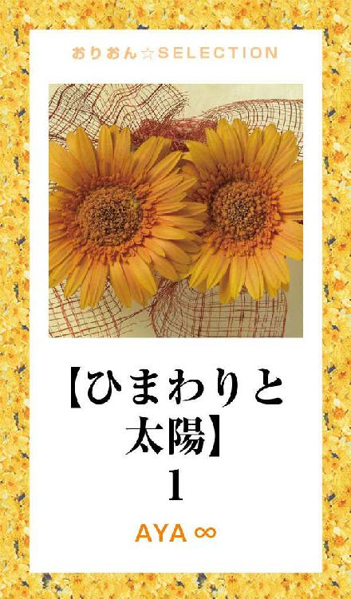
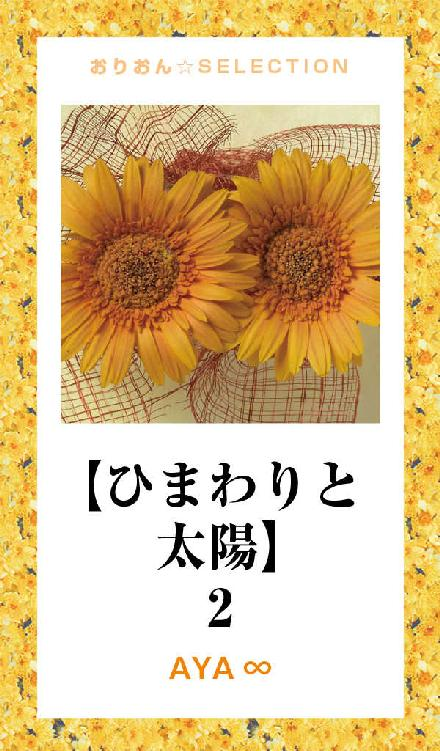

| 【ひまわりと太陽】 完全版 | |
| ＡＹＡ∞ | |
この本は横書きでレイアウトされています。
また、ご覧になる機種により、表示の差が認められることがあります。

まずは、メインの２人♪
●水嶋 海歌（ミズシマ ミカ・22)
普段は社会人。
上司からも後輩からも、頼りにされている。
休日は、姉のカフェを手伝っている。
昇のファンであり、恋人でもある。
気が強くてなかなか素直になれないが、昇のことになるとかなり弱い......。
●大地 昇 (ダイチ ノボル・24)
COLORSのメンバー。
明るくて真っ直ぐなところが、海歌にとってのひまわり。
過去の恋愛に傷付いてトラウマもあったが......今ではひだまりのような暖かさをくれる海歌に、かなり惚れ込んでいる。
続いて、メインの２人を見守る重要な登場人物☆
●水嶋 優海 (ミズシマ ユミ・27)
海歌の姉。
カフェの店長でもある。
穏やかな優しい性格だが、少々天然。
海歌が昇のファンであることを、昇本人に言ってしまったのも優海である。
●COLORS（カラーズ）
歌って踊れて、ドラマや映画、ＣＭやバラエティーなど、沢山の場所で大活躍中の、人気アイドルグループ。
●青山 快気 (アオヤマ カイキ・22)
COLORSの最年少メンバー。
かなりの食通で、料理に関する本も書いている。
海歌に似た恋人がいるからか、いつも海歌と昇を応援している。
●高城 秀護 (タカシロ シュウゴ・27)
COLORSのリーダー。
かなりの天然ボケキャラ。
けれどリーダーとしては、別人のように頼もしくしっかりしている。
そのギャップが魅力のひとつでもある。
●国生 宏士 (コクショウ ヒロシ・26)
COLORSの副リーダー。
かなり頭が良くて、落ち着いている。
天然ボケ発言をする秀護に、よくツッコミを入れている。
今は恋愛より、仕事が大事らしい。
●黒井 忠司 (クロイ タダシ・37)
COLORSのマネージャー。
アイドルとファンである昇と海歌が、恋人という関係になることを大反対している。
マスコミの存在を、異常な程に恐れているが。
それには悲しい理由が......。
コンサート会場。
広い客席は全て、幼い子供から年配までの女性と男性客で埋まっていた。
学生を中心とした女性客の手には、それぞれ『秀護』『宏士』『昇』『快気』と名前が入ったうちわが握られている。
みんな嬉しそうな笑顔を浮かべて、これからステージに上がるアイドルグループを待っていた。
薄暗い舞台裏。
カッコ良い衣装を着たCOLORS４人のそばには、動きやすいシャツとジーパン姿のスタッフ十数人が輪をつくるように集まっていた。
「この公演がっ、今回のコンサートの最後ですっ！」
みんなに聞こえるように声を上げるのは、リーダーの秀護。
「最後まで気を抜かずにっ！ でもっ！ めちゃくちゃ楽しんでいくぞーッ！！！！」
「オーッ！！！！」
秀護の掛け声に、全員が声を上げて応えた。
明るかったコンサート会場が、フッと暗くなって、それに反応するように、ざわざわとしていた客席がシンと静まる。
ドンッ！！ ドンッ！！ ドンッ！！
コンサート会場に響き渡る音。
ステージを照らす赤や緑のライト。
ステージ中央にあるスライド式の扉が開くと、そこにはCOLORSの４人が立っていて、
「キャーッ！！！！」
客席からは、一斉に歓声が上がった。
歌って、踊れて、ドラマ・映画・ＣＭ・バラエティーで大活躍中の、人気アイドルグループ。
それが、COLORS。
４階建てのビル。
パソコンで書類の整理をしていたはずの、数人の社員の手は止まっていて、困惑した表情で、視線を向けている先には......金色の長髪と乱れたスーツ姿の、20代半ばの男性がいた。
手には煙草を持っていて、ヘッドホンからは大音量のために音がもれている。
女性はもちろん、男性も注意することが出来ないなか、
バッ！！！！
男性からヘッドホンを取り上げたのは、スーツ姿の海歌だった。
「ッ......なにすんだよッ！！？」
思い切り不満そうな声を上げて、男性は勢い良く立ち上がる。
一般的な女性なら、そこで怖くなって泣き出すか逃げ出すかするはず。
だが海歌は、怯むこともない。
「今は仕事中。みんなの邪魔しないで」
きっぱりと言い切った。
「はぁっ！！！？ お前、俺が誰だか分かってて言ってんのかよッ！？ 俺は、この会社の社長の息子だぞッ！？」
今時そんな理由でえばる奴がいるのかと、見ていて逆に可哀想になる。
「社長は社長、あなたはあなた。あなたは私達と同じ、社員の１人でしかないはずよ」
他の社員達は声には出せないものの、海歌が正しいと頷いている。
言葉では勝てないと思った途端、
「ウゼェんだよッ！！！！」
男性はいきなり、海歌の肩を押して突き飛ばした。
バランスを崩して後ろに倒れそうになった海歌の体は、誰かに支えられて倒れずにすんだ。
「大丈夫か？」
「獅堂（シドウ）さんっ」
体を支えてくれたのは、背が高くて少し逞しさを感じる男性社員。
「女に暴力とはサイテーな野郎だな。俺が代わりに相手になってやろうか？」
海歌を守るように前に立ち、
「小1から高卒まで空手をやっていた、俺で良ければ......だけどな」
脅かすようにニヤリと笑って、ボキボキと手を鳴らす。
さすがにそんな獅堂には勝てないと思った男性は、チッ！と小さく舌打ちをしてこの場から離れて行った。
「こういう時は、俺を呼べ」
獅堂は優しい口調で言うと、海歌の頭をポンポンと撫でた。
海歌よりも少し年上だから、ということもあるが、兄のような人で、会社に入ったばかりの頃も、分からないことだらけだった海歌に、きちんと仕事を教えてくれた。
つまり海歌にとって獅堂は、頼もしい兄であり、良い先輩でもある。
夜、今日中に終わらせなければいけない仕事があったため、会社からやっと出られたのはいつもより遅い時間だった。
「水嶋っ！」
後ろから呼ばれて振り向くと、獅堂が走ってきて隣に立つ。
「俺の家もこっちだから、途中まで送ってくよ」
「ありがとうございます」
そのさり気ない優しさに、海歌は微笑んで礼を言った。
暫くは、仕事や最近観た映画などの話で盛り上がっていたけれど、獅堂はふと、街灯に照らされた海歌の横顔に見惚れて......。
「......水嶋って、彼氏いるのか？」
「え？」
意外なその質問に、海歌はきょとんとした表情を浮かべてしまった。
「あっ......えっと......」
この質問の答えには、いつも戸惑ってしまう。
『いません』と答えるのは......何だか昇に悪い気がするし、自分も、昇との関係を否定するみたいで......淋しい気持ちになってしまう。
けれど『います』と答えたら......どこのどんな人かまで、聞かれてしまいそうだし......。
「大地 昇」
「えっ！！！？」
獅堂の口から出た名前に、心臓が飛び出しそうなくらい驚いた。
「ファンなんだろ？」
『ファン』という言葉に、安心して力が抜ける。
休憩時間で女性社員数人とお茶をしている時『昇のファン』と話したことがあったから。
......正確には、恥ずかしくて答えたくなかったのに、無理やり聞き出された訳だが。
とにかく、その時のメンバーの誰かに聞いたんだろう。
「理想が高いから、彼氏が出来ねぇんだよ」
「あはっ」
質問に答えられなかったことで『彼氏はいない』と思った獅堂に、海歌はただ苦笑いで応えた。
「俺にしておけよ」
「......はっ？」
思いもしなかったその言葉に、驚きのあまり反応が遅れた。
「俺は......お前が好きなんだ......」
冗談で言っていないことは、その表情からすぐに分かる。
まったく気付いていなかった。
いつも優しさを感じてはいたけれど、それは妹みたいに思ってくれているからだと、勝手に思い込んでいたから......。
「あっ、あのっ......えっと......」
耳まで真っ赤に染まっていくのが、自分でも分かる。
獅堂は逞しさを感じるスタイルと結構カッコ良い顔と、真っ直ぐで面倒見の良い性格で、女性社員からもモテている。
昇といい獅堂といい、何で自分なんかを好きになってくれるんだろう......？
２人なら、もっと可愛くて綺麗な人と付き合えるはずなのに......。
言葉が上手く出てこない海歌に気付くと、
「......返事は、今すぐじゃなくていい」
気遣うように優しく言って、獅堂は先を歩いて行った。
海歌の家のリビング。
パジャマ姿の海歌は、ソファの上で深く深く溜め息を吐いた。
頭のなかに思い出されるのは、獅堂からの思いがけない告白。
兄のように思っていた人に、まさか好きだと言われるなんて......。
「溜め息吐くと、幸せ逃げんぞ？」
声のした方に振り向くと、そこにはお風呂上がりの昇が立っていた。
昇はタオルでゴシゴシと濡れた髪を拭きながら、海歌の隣に座る。
「......ねぇ、昇」
「ん？」
「昇はさ......告白されて断るとしたら、何て言う？」
出来るだけ、さり気なく聞いてみた。
告白なんてめったにされたことの無い海歌は、上手い言葉がみつからない。
でも昇なら......モテるしドラマの台詞から、何か上手い言葉を知っているかも。
「あなたに興味ありません、かな？」
「ひどッ！！」
期待していたのとは正反対の昇の酷い言葉に、思わず声を上げた。
「酷いのはどっちだよっ。自分の人気を上げるためや、ただアイドルと付き合いたいってだけで、近付いてくるくせにっ」
少しムキになった昇は、不満そうに唇を尖らせる。
そういえば......前に快気が言っていた。
モデルや女優は、スキャンダルで自分の人気を上げるためだけに、一般の女性は、アイドルと付き合いたいってだけで、近付いてくることもあるって......。
「純粋に、昇の笑顔や優しいところを、純粋な気持ちで好きになってくれた人には？」
改めて質問をする海歌を、昇は真顔で数秒見つめてから。
「海歌......」
「ん？」
「ひょっとして......誰かに告られた？」
「えっ！！！？」
その言葉に反応するように、海歌は頬を赤く染めた。
隠しておこうと思っていたのに......思いっきり顔に出てしまうなんて......。
「マジッ！！！？ どこの誰ッ！！！？」
あわてた声と表情で、昇がかなり動揺しているのが分かる。
バレてしまったからには、答えないわけにはいかない......。
「......会社の、先輩......」
海歌が答えた途端、バサッ！！と昇の手にあったタオルが床に落ちた。
アニメやドラマだったら『ガーン！』なんて効果音が入りそうなくらい、ショックを受けた表情をしている。
けれど次の瞬間には、昇にグイッ！と抱き寄せられて、
「断るよな......？」
不安そうな声で聞かれた。
肩に顔を埋められているから、表情までは分からないけれど......きっと、その声と同じような表情だと思う。
「当然でしょ？ 私は......昇だけ、だよ......」
自分で言っていて恥ずかしい言葉に、仄かに頬が赤く染まる。
「でもね、凄く良い人だから......あんまり傷付けないように断りたいの」
それ以外の気持ちは無いことを信じてほしくて、昇をギュッと抱き締め返した。
断ることで、獅堂を傷付けてしまうことに変わりはないけれど、それでも、その傷を少しでも減らせたらと思う。
「......やっぱ......『好きになってくれて、ありがとう』......かな？」
そんな海歌の気持ちが伝わって、昇も今度は真剣に答える。
「そのすぐ後に『すっげー愛してる彼氏がいるから、ごめんなさい』って！」
『すっげー愛してる彼氏』って......確かにそうだけれど、そんな恥ずかしいこと言えない......。
「んで、最後に『私のことは、スパッとズバッとスッキリサッパリ忘れて下さい！』って。言うの忘れんなよ？」
拗ねたような昇の声。
抱き合っているから表情は分からないが、子供みたいに唇を尖らせて頬を膨らませているに違いない。
「わかった？」
「はい」
今言われたこと全部をそのままは、言えないと思うが......。
それでも、言わなければいけないポイントは理解したつもり。
「よしっ」
今度は満足したような、昇の声。
昇はどうしても、他の男が海歌に好意を持っているのが嫌みたいで、そのことに苦笑しつつも、内心では嬉しかった。
ゴソッ......。
海歌の背中の方から、微かな音がしたと思った瞬間、
「ッ！！！？」
ビクッ！！と反応するように、体が跳ねた。
微かな音は、海歌のパジャマのシャツを捲り上げる音で、シャツのなかに入ってくる昇の大きな手が、背中部分の素肌を撫でてくる。
「ちょっ！？ ちょっ！？ ちょっ！？ ......昇ッ！！」
驚きと恥ずかしさから、真っ赤になって押し退けようとするけれど、抱き締められている力が強くて、動けない。
「やぁっ」
「嫌......？」
しょんぼりとした表情で、昇は顔を覗き込んでくる。
もし犬みたいな耳があったら、しゅんと下がっているはず......。
「ぅっ......そのっ、昇コンサートで疲れてるんじゃないかなぁ？って......」
『今日は無理しないで、休んだ方がいいよ？』なんて気を遣うフリをして、止めてみるけれど、
「別腹！」
ニッと白い歯を見せながら、昇は笑顔を向けてきた。
別腹って......『私はスイーツじゃない！』と、ツッコミを入れたくなる。
でも......昇にとってはCOLORSのメンバーとファンの人達で作るコンサートは、メインディナーで、海歌と触れ合う甘い時間は、スイーツのようなもの。
「もぉっ......」
昇には勝てないと思うと、海歌は抵抗しようとしていた手の力を抜いた。
昇はずるい。
いつもは子供みたいに無邪気で、ひまわりみたいな笑顔でいるくせに、こういう時は、色気のある大人の男性の顔になる。
海歌だけが見ることの出来るその表情に、いつもドキドキが止まらない。
昇には、絶対に勝てない......。
「海歌、すっげー好き！」
「......私も」
「私も......？」
いつもなら、そこまでで許してくれるのに、今は、その先の言葉を求められる。
これから触れ合うわけだから、聞きたい気持ちも分かる。
でも......恥ずかしくて。
「だっ、だっ、だからっ、私も昇が好きっ！！！！」
真っ赤になって、言い放つように言ってしまった。
お世辞でも、可愛いとは言えない......。
それなのに。
「へへっ。サンキュ！」
仄かに頬を赤く染めて、すっごく嬉しそうな笑顔を向けられた。
そんなに喜んでくれるなら......もっと沢山、素直に言えるようになりたい。
でも海歌には......恥ずかしくて、恥ずかしくて、なかなか難しい。
『昇のことが、大好き！ 愛してる！』
心のなかでいつも思っている、この言葉を届けるように。
この夜も、海歌は昇の愛の行為に応えた......。
昇の腕のなかで眠るようになってから、時々見るようになった夢。
あれは......海歌がまだ、４才か５才くらいの時、夏休みに、姉の優海と母との３人で、おばあちゃんの家に遊びに行った。
おばあちゃんが住んでいるのは、車もあまり通らない沢山の自然に囲まれた田舎。
家からほんの少し離れた場所には、50代の麦藁帽子を被った男性が手入れをしている、ひまわり畑があった。
ひまわり畑の真ん中には、大人２人が横に並んで歩けるくらいの道があって、地元の人や観光客が、自由に通ることが出来る。
空のように綺麗な青色のワンピース姿の海歌は、楽しそうな笑顔を浮かべてその道を駆けていた。
後ろには、女の子らしく淡いピンク色のワンピース姿の優海が、母と手を繋いで歩いている。
ふと海歌は立ち止まり、ひまわりを見上げた。
明るくて真っ直ぐに咲くひまわりに、見惚れていると。
コロコロ......。
足元に、サッカーボールが転がってきた。
両手でサッカーボールを拾って、キョロキョロと周りを見渡すと、ひまわり畑から少し離れた場所に、広い公園があった。
海歌よりも少し年上の男の子が、公園からジッと視線を向けている。
つばを後ろに帽子を被り、鼻のてっぺんに絆創膏を貼っていて、半ズボンが似合う......いかにもわんぱくな感じの男の子。
何も言ってこないけれど、多分このサッカーボールは男の子のもの。
届くようにと、海歌は力を込めてボールを投げた。
するとボールは、男の子から少し離れた場所でバウンドをして、数回バウンドした後に、コロコロと男の子に向かって転がっていく。
男の子は左手でサッカーボールを抱えると......右手の人差し指で、右目の下を押して『べーっ！』っと、海歌に向かって舌を出した。
「ッ！！！？」
それを見た海歌は、驚いたように反応する。
お礼を言われても、『あっかんべー』をされたくはない！
さすがにムカついて、男の子に向かって『いーっ！！』っと歯を剥き出した。
背を向けて走って行く男の子の姿が小さくなるまで、そのままでいた......。
夕方、母がおばあちゃんの家のドアを開けるのとほぼ同時に、ガチャッ！と隣の家のドアが開いた。
隣の家から出てきたのは、公園にいたあの男の子。
「あっ！」
母の後ろにいた海歌が、驚いた弾みで小さく声を上げるが。
母とそばにいる優海が視線を向けてきて、あわてて口を押さえた。
「......こんばんはっ！」
「こんばんは」
「こんばんは」
少し照れながらも挨拶をする男の子に感心して、母と優海は笑顔で応える。
母と優海が家に入り、続いて海歌も入ろうとした時、ふと、男の子と視線が合って、また右手の人差し指で右目の下を押さえて『べーっ！』と舌を出される。
それにムカっとして、海歌も『いーっ！』と歯を剥き出した。
翌日、薄暗くなった道を、海歌は大きな買い物カゴを持ってとぼとぼと歩いていた。
買い物カゴのなかには、ジャガイモとニンジンと玉ねぎが数個入っている。
おそらく、今日の夕飯のメニューはカレー。
けれど何故、海歌が１人で暗くなる時間に歩いているのかというと......お使いを頼まれた帰りに、迷子になってしまったから。
最初はまだ明るい時間に優海と２人で行くように言われたが、海歌が１人で行くときかなくて。
母とおばあちゃんは、何回か行ったお店だし、そう遠い場所でもないからと、渋々許してくれた。
だが帰り道、海歌は近道をしようと勝手にルート変更をしたのが間違いだった。
歩けば歩くほど、見たこともない景色が広がってきて、もう何十分歩いているのかも、分からない。
買い物カゴは量的にそんなに重くはないが、歩き過ぎて足が痛い......。
大人に助けを求めようとしても、こういう時に限って人通りも店もない。
街灯も少ない田舎だから、どんどん暗くなる。
木が風で揺れる音や、犬の遠吠えが聞こえてきた。
不安と恐怖と淋しさで、胸が苦しくて、
「ひっく......」
瞳にじわじわと涙が溢れてきて、泣き出しそうになった時。
「......やっとみつけた......」
後ろから息を切らしながらの声がして、海歌は恐る恐る振り向いた。
そこにいたのは......つばを後ろにして帽子を被り、鼻のてっぺんに絆創膏を貼っていて、半ズボンが似合う、あの男の子。
一瞬、また意地悪されるかと思ったけれど......。
「帰ろう」
男の子は優しく微笑んで、海歌に手を差し伸べてくれた。
海歌は黙って頷くと、その手をギュッと握る。
家に向かって歩いている間、お互いに一言も話さなかったけれど、海歌が握った男の子の手からは、不器用な優しさが伝わってきた。
気付いた時には、おばあちゃんの家のそばまで来ていて。
「海歌ッ！！！！」
とても心配した母とおばあちゃんが、あわてて海歌に駆け寄ってきた。
「ふぇっ......おかぁさぁーんっ！！！！」
安心した途端、海歌は男の子の手を離して泣きながら母に駆け寄った。
大きくて暖かい母の両手が、体をギュッと抱き締めてくれて、おばあちゃんが、買い物カゴを受け取る代わりに海歌に上着を掛けてくれる。
けれど、そんな海歌とは正反対に、
「このバカッ！！ こんな時間まで、どこ行ってたんだいッ！！！？」
男の子の母親が、声を上げて男の子の頭を叩いた。
「一緒に遊んでたっていう友達に聞いたら、とっくに帰ったって言うしっ！！ どれだけ心配したか分かってるのッ！！！？」
怒鳴るのも叩くのも、本当に男の子を心配していたからこその愛情。
けれど幼い海歌には、それがまだ分からなくて、
「お兄ちゃんをイジメないでぇっ！！！！」
泣きながら、男の子の母親の手を両手で押さえた。
押さえたといっても、その小さな体では抱き付いているだけだが......。
「お兄ちゃんがっ、海歌をつれてきてくれたの......っ！！！！」
必死で止める海歌の姿を、大人３人は見て、
「どうもありがとう」
海歌の母は、男の子の視線に合わせるようにかがんでお礼を言う。
その隣では、おばあちゃんが柔らかい表情でニコニコしていて、男の子の母親も、怒ってしまったことを反省するように男の子の頭を撫でた。
少し照れた表情を浮かべながらも、男の子の視線の先には......両手で涙を拭っている海歌がいた。
翌朝。
「おばあちゃん、また来るねっ！」
おばあちゃんに別れを告げる、優海と母。
けれど海歌は、一歩下がったところから......男の子の家のドアを見つめていた。
気になったり、会いたいと思う、この気持ち。
初めてのことで、よく分からないけれど、胸がキュンと締め付けられる......。
「海歌、行くわよ」
タクシーに乗ろうとする母に呼ばれて、行こうとした時、
「待ってっ！！」
後ろから引き止める声がして振り向くと......あの男の子があわてて駆けてきた。
男の子は海歌の前に立つと、乱れた息を整える。
そして、大きなひまわりの花を１本差し出した。
「......おじちゃんに、もらってきた......っ」
おじちゃんとは、多分ひまわり畑を手入れしている男性のこと。
「......大きくなったらっ、ボクのお嫁さんにしてあげるッ！！！！」
真っ赤になりながら、男の子は自分の気持ちを声にした。
タクシーのなかにいる母と優海は、少し驚いたような表情を浮かべて。そばにいるおばあちゃんは、穏やかな表情で見守っていた。
あの日、ひまわりを見上げている海歌が可愛くて、一目惚れしてしまった。
本当は仲良くなりたかったのに......恥ずかしくて、『あっかんべーっ！』なんて、意地悪しか出来なかった。
遊んでいた友達と別れて、家の近くまで帰った時、買い物に出たきり帰ってこない海歌を、海歌の母とおばあちゃんが探している姿を見て、思わず駆け出していた。
素直になれなかったけれど。
上手く話せなかったけれど。
本当は海歌が、大好き。
「......海歌......大きくなったらっ、お兄ちゃんのお嫁さんになるっ！」
仄かに頬を染めながらも笑顔で、海歌は男の子からひまわりを受け取った。
男の子の不器用な優しさは、幼い海歌にも伝わったから。
気になったり、会いたいと思うのは、きっと......『お嫁さんになりたい』って、ことだと思うから。
これが、海歌にとっての初恋。
また会えると、思っていたけれど......。
おばあちゃんが引っ越しをしてしまったから、それ以来会うことはなかった。
今の海歌にとっては、大切な思い出。
眠りから覚めた海歌がゆっくりと目を開けると、すぐそばに優しい表情を浮かべた昇がいた。
「おはよ......」
「お、おはっ、おはよ......っ」
同じ朝を迎えるのは、初めてじゃないのに、どうしても慣れなくて、恥ずかしい......。
「すっげーいい顔してたけど、何か良い夢見てた......？」
長い指で優しく海歌の髪を梳きながら、昇は首を傾げる。
たとえ幼い頃のことだとしても、昇の腕のなかで他の男の子の夢を見ていたなんて知られたくなくて......。
「......ひまわり」
「ひまわり？」
「幼い頃......おばあちゃんの家の近くにある、ひまわり畑が好きだったの」
「そっか......。俺の実家の近くにも、ひまわり畑があるから、いつか連れて行ってあげる」
にっこり笑った昇のその笑顔が、海歌にとっては１番好きなひまわり。
「昇は......ひまわりに似てるね」
「ひまわり......？ えっ！？ 俺が！？」
意外なその言葉に、目を丸くして驚いている。
きっとこんなことを言われたのは、初めてなんだと思う。
「明るくて、真っ直ぐなところ」
クスッと笑って海歌が理由を言うと、昇は照れたように頬を赤く染める。
「俺がひまわりなら......海歌は太陽だな」
「太陽......？」
首を傾げる海歌に、頷いてから言葉を続けた。
「ひまわりは、太陽に向かって咲くから。俺は......海歌のために咲きたい」
ひまわりみたいな笑顔を浮かべながらの、その言葉があまりにも嬉しくて、思わず昇にギューッと抱き付いた。
「大好き......っ」
普段なら、恥ずかしくて絶対に素直に言えない言葉。
愛の行為からお互いに何も纏っていない、こんな状態で抱き付くなんて、普段の海歌なら、絶対に有り得ない。
けれど今はそんなこと、どうでもいいくらい、まったく気にならないくらい。
昇に気持ちを伝えたかった......。
初恋の男の子との約束は、きっと守れそうにない。
海歌には昇以外の男性なんて、考えられないから。
でも......強く祈ってる。
一緒にいられるだけで、幸せだと思える。
そんな......素敵な恋をしてくれていることを......。
夜の優海のカフェ。
閉店した時間にもかかわらず、大きなテーブルの上には手作りの料理やお菓子が並んでいた。
そのテーブルの席には、美味しそうにサンドイッチを頬張る昇と......緊張して動けない海歌がいる。
海歌が緊張している理由......。
同じテーブルの斜め側に座る、COLORSの秀護と宏士。
その２人の向かい側に座る、同じくCOLORSの快気。
３人の視線が、自分に向けられているから......。
「君が海歌ちゃんかぁ」
「はっ、はいっ！！」
マジマジと見てくる秀護に、緊張しながらも海歌は返事をする。
秀護は最年長のリーダーというだけあって、大人の魅力を感じる。
とてもカッコ良い人。
「快気から話は聞いていたけれど、良い子そうで安心したよ」
「僕が言ったとおりでしょ？」
落ち着いた雰囲気で微笑む宏士に、快気は笑顔を浮かべた。
知的キャラで、クイズ番組で活躍をしたり、週に１回ニュースキャスターをしている宏士。
ＴＶではコンタクトだが、普段は眼鏡をかけているらしくて......その眼鏡がより知的さを表していた。
快気は相変わらず、ほんわか笑顔で癒し系キャラ。
食通なだけあって、このカフェで１番人気のクッキーを幸せそうに頬張っていた。
「今日は兄ちゃん達に海歌のことを知ってほしくて、呼んだんだから。聞きたいことがあったら、何でも聞いてっ！」
平然とした昇の言葉に、海歌は益々緊張する。
何だか緊張し過ぎて、お腹が痛くなってきたかも......。
しかし、そんな海歌には気付くこともなく。
「昇と出会った場所は？」
穏やかな口調で、宏士が質問をしてくる。
「こっ、コンサート会場の近くですっ！」
「俺あん時、初めて女性に胸倉つかま......」
「ッ！！！？」
思い出したように言う昇の言葉を止めるために、海歌はあわてて片手で口を押さえた。
「胸倉って？？」
「なっ、何でもないっ！！」
首を傾げながら聞いてくる快気に、思い切り首を横に振った。
「昇っ、お願いだから余計なこと言わないでっ！！」
小声で海歌は必死に昇にお願いする。
怒って男性の胸倉を掴む女性だなんて、知られたくないのは当然のこと。
「秀護兄は？ 彼女に何か聞きたいことないのか？」
ふいに宏士が黙ったままの秀護に話をふる。
「２人のことで、気になることとか」
ほんわかとした笑顔を浮かべながら、快気も秀護に声をかけた。
海歌も昇の口から手を離して、席にきちんと座り直す。
「......昇って......」
真顔の秀護の言葉を聞きながら、昇はアイスコーヒーを一口、口に含む。
「Ｈうまい？」
「ブーッ！！！！」
思いもしなかったその質問に、昇は口に含んだアイスコーヒーを思い切り吹き出した。
一口だけだったのと、唇にあてていたコップのなかに戻ったのが、唯一の救いかもしれない......。
スパーンッ！！！！
まるで漫才コンビのツッコミのように、宏士は秀護の頭を叩いた。
「お前は真面目な顔して何聞いてんだよっ！！！！」
「っー......。だって気になることがあったら、聞いていいって言ったじゃんッ！！！？」
叩かれた頭を押さえながら、秀護は涙目で応える。
「そういう意味じゃねぇっ！！」
ムキになって振り上げた宏士の右腕は、振り下ろすことが出来ない代わりに震えていた。
そんな２人には構わず、
「昇兄、大丈夫......？」
ゴホゴホゴホッ！！と、ムセっている昇の背中を、快気は落ち着いた様子で摩っている。
いや、落ち着いた様子というよりは......慣れた様子といった方が正しいかもしれない。
「海歌ちゃん、うちのセクハラ兄ちゃんがごめんね？」
耳まで真っ赤に染まっている海歌に、快気は穏やかに微笑んだ。
こんな時でも、ほんわか笑顔が出来るなんて......やっぱりスゴイ。
この４人のやり取りは、ＴＶでも度々見ることがあった。
今みたいな下ネタはめったに言わないが、とぼけたことを言う秀護に宏士がツッコミを入れて、今隣でムセっている昇が爆笑して、快気がほんわかな笑顔でファンの人達に喧嘩じゃないことを解説する。
けれど、こんな天然ボケキャラな秀護だが......本当は誰よりも、他のメンバー３人のことを理解している。
どの仕事の時も『今は誰を前に出させるか』、『どうしたらファンが喜ぶか』を即座に判断出来るため、番組プロデューサーにとっても1番頼れる存在になっていた。
前にＴＶ番組の司会者が、何も知らないで『リーダーは１番頭の良い宏士がなるべきでは？』と言ったことがあった。
その時、宏士は何の迷いもなく『秀護兄以上に、リーダーにふさわしいメンバーはいない』と答え、それに対して、昇と快気も同意見。
当然、ファンの人達も３人と同じ気持ちでいた。
「そういえば......今日お姉さんは？ お料理のお礼が言いたいのに......」
店内や調理場の方を見渡しながら、快気が聞いてくる。
「今は買い物に出てるの」
海歌が答えると、タイミング良く。
カランカラン......。
ドアのベルが鳴った。
閉店の時間帯だから、客が来るはずがないと思っている海歌は、
「お姉ちゃ......」
優海が帰ってきたと思い、席から立ち上がって笑顔で振り向くけれど、一瞬にして、その笑顔は消えた。
そんな海歌に気付いた昇が、何気なくドアの方に向いた瞬間、
「黒井さんッ！！！？」
驚いた弾みで、昇も席から立ち上がった。
ドアの前に立っているのは、COLORSのマネージャー。
紺のスーツが黒井の冷静な雰囲気を、より引き立たせている。
「......やっぱり、こういうことか」
小さく溜め息を吐きながら、黒井は海歌に近付いてくる。
「昇には会わないでほしいと、お願いしたはずです」
鋭い目と冷たい声で責められて、海歌の体が微かに震えた。
「俺が海歌に会いたくて、来てるんだよっ！」
そんな海歌を守るように、昇は海歌の前に立つ。
「黒井さん、どうして昇兄と海歌ちゃんのこと反対するの......？」
「海歌ちゃんは、思っていたよりずっと良い子だよ」
悲しそうな表情を浮かべた、快気と秀護が止めても、
「せめて俺達だけは、２人を応援してあげてもいいんじゃないかな」
冷静に説得しようと、宏士が声をかけても、
「お前達は黙っていろ」
黒井は聞き耳を持とうとは、してくれなかった。
「快気。料理のレシピ本の締め切りが近いっていうのに、遊んでいる場合じゃないだろう」
さすが、COLORSのマネージャーなだけはある。
「秀護。遊んでいる時間があるなら、来月から始まる舞台の台本を読み直しておけ」
メンバー全員の、スケジュールを把握していて、
「宏士。明日はキャスター担当の日で朝早いんだ、さっさと帰って休め」
言っていることに、説得力がある。
快気と秀護と宏士の３人は、何も言えなくなってしまった......。
「昇。お前は俺と一緒に来い」
冷静な口調で、黒井は呼び掛けるけれど、
「俺、行かないよ」
昇はキッパリと断った。
「今日はずっと海歌のそばにいるって、約束したんだ」
「昇......」
その言葉に、海歌の胸は嬉しさを感じる。
だが、
「お前、俺の言うことが聞けないのか？」
黒井にとっては、苛立ちを増す言葉でしかなかった。
「そうじゃない！ でも......海歌のことでは引けないっ」
落ち着いて話そうとはしているけれど、昇もムキになる感情を隠せない。
ピリピリとしたこの場の空気に、快気と秀護と宏士の３人は、席から少し離れて立ったまま、何も言えずに困惑していた。
昇は言葉通り、海歌のことでは絶対に引かないと思う。
けれど黒井も、引く気配はまったくない。
「......昇......」
悩んだような短い沈黙の後に、海歌は穏やかな声で呼ぶ。
そして、振り向いた昇に、
「黒井さんのところに行って？」
微笑みながら、そう告げた。
声には出さないけれど、昇の驚きは表情で分かる。
「私は、大丈夫だから」
本当は、行ってほしくない。
でもどちらかが引かない限り......快気と秀護と宏士の３人も、このピリピリとした空気から抜け出すことは出来ない。
自分達のせいで、大切な人達まで嫌な思いをさせたくない。
次に昇と会えるのは......きっと、数日後。
これだけ黒井に反対されているのなら......予想以上に、かかるかもしれない。
それでも、昇のことを信じて待っているから。
「私は、大丈夫だよ」
淋しい思いを無理に押さえて、にっこりと笑顔を浮かべた。
「......わかった」
ほんの少しの沈黙の後、昇は渋々と頷く。
よかった......。
胸に痛みを感じながらも、そう思った瞬間、俯き気味になっていた海歌の顎に、昇の手が触れて、上に向かされたのと、ほぼ同時にそのまま唇を重ね合わされた。
強く触れるだけのキス。
驚きのあまり、海歌は目を見開いた。
秀護もビックリした表情を浮かべていて、宏士はとっさに快気の目を両手で隠した。
『そこまで子供じゃない！』とツッコミを入れたくなるが、宏士にとって最年少の快気はそんな存在。
「昇ッ！！」
不機嫌な黒井の声に呼ばれて、昇はゆっくりと海歌の唇から唇を離す。
「電話もメールもいっぱいするから、携帯電話、充電しとけよ？」
ニッと悪戯っ子みたいな笑顔を浮かべる昇に、胸の奥から安心出来た。
「うんっ」
仄かに頬を赤く染めながら、海歌は嬉しそうに頷く。
昇の気持ち、伝わった。
『海歌に笑顔になってほしい』
そんな、唇から伝わってきた昇の気持ちが嬉しくて、海歌は作ったものではなく、自然な笑顔を浮かべていた。
昇が黒井に連れて来られたのは、ホテルの一室。
仕事の事情で家に帰れない時に、よくこの部屋に泊まっている。
「彼女と別れると言うまで、お前をこの部屋から仕事以外で出すつもりはない」
椅子に座って真剣な表情で言う黒井の言葉に、帽子とサングラスで変装をしている昇は、鞄を床に下ろしながら小さくため息を吐いた。
「一生この部屋で暮らすことになったとしても、俺は海歌と別れないよ」
この気持ちに、迷いなんてまったくない。
「アイドルとファンの恋愛がタブーとされていることくらい、お前にだって分かるだろう？」
「海歌は俺がアイドルだから好きになってくれた訳じゃないし、俺も海歌がファンだから好きになった訳じゃないっ」
「他の奴等はそんなふうに見てくれないんだよッ！！！！」
苛立ちを押さえて冷静に話そうとしていた黒井だが、思わず声を上げて目の前にある机をダンッ！！と叩いた。
驚いた表情を浮かべてから、昇は黙って向かい側の席に座る。
帽子とサングラスを机の上に置くと、真剣な表情で口を開いた。
「黒井さん......。俺に何か隠してない？」
昇のその言葉に、黒井はピクッと反応する。
「黒井さんはいつも厳しくて......快気を泣かせたり、冷静な宏士兄と口論になることもあったけれど......。でも......黒井さんが厳しいのは、俺達を大切に思ってくれてるからだって分かってた」
だからこそ、納得出来ない。
４人を大切に思ってくれている黒井なら、応援は出来ないとしても、『２人が真剣なら......』と、見守ってくれると思った。
それなのに、こんなに必死になって反対するなんて......。
「......龍希（リュウキ）......」
少し俯き気味に、黒井はひとつの名前をポツリと声にした。
龍希......？
「10年も前のことになる。俺がCOLORSの担当になる前に、マネージャーをしていたアイドルだ......」
瞳を悲しみで染めながらも、黒井は落ち着きを取り戻して話し始める。
当時、黒井は27歳で、龍希は20歳だった。
龍希は優しくて素直で明るい性格で、そんなところが、ファンを惹きつける魅力のひとつだった。
音楽スタジオ。
「兄ちゃん！」
龍希のその言葉に、この場がシーンと静まり返った。
......兄ちゃん？
この室内にいるのは、スタッフ数人と黒井だけ。
「あっ」
まるで『学校の女性教師』を『お母さん』と呼んでしまったような空気に、龍希は頬を真っ赤に染めた。
「ごっ、ごめん......。俺さっ、黒井さんのこと兄ちゃんみたいに思ってるから......その......つい」
心のなかだけでの呼び方が、つい声に出てしまったらしい。
スタッフ達はクスクス笑っているが、黒井だけは優しく穏やかに微笑んだ。
「俺でよければ、兄になってやる」
「ほんとっ！！！？」
その言葉に、龍希は目をキラキラ輝かせて反応する。
そういえば......龍希は１人っ子だったな。と、思い出した。
「ただし！ 仕事中、俺はマネージャーだ。ビシビシいくからな？」
「はいっ！」
大きく頷きながらも、嬉しそうな笑顔を浮かべる姿が可愛くて、穏やかな笑みを浮かべながら、黒井は弟に接するように龍希の頭をクシャッと撫でた。
「ある日......。龍希も昇と同じように......ファンの女性と恋をした......」
その言葉に、今度は昇がピクッと反応した。
「それを龍希から打ち明けられた時、俺は反対しなかった。アイドルとファンの恋愛はタブーだと分かっていても......２人が真剣なら応援しようと思った」
それが何故、こんなにも考え方が変わってしまったのだろうか......？
「上手くいくと思った矢先......２人の関係を、マスコミに知られてしまった」
その時のことを思い出して、黒井の表情が苦しそうなものになる。
「マスコミは異常な程に追求してきて、面白おかしく記事にして......。『龍希は性的行為を目的に、ファンである彼女に声をかけた』なんて記事もあった......」
黒井が極度にマスコミを嫌い、恐れる理由が分かった。
けれど、それだけじゃない......。
「やがて、彼女さえも龍希から離れて行った。マスコミの酷さに疲れたとはいえ......他の男のところに行ったんだ」
そして......夕方のホテル。
黒井がドアを開けると、電気が消えているために薄暗かった。
夕日が照らす窓のそばの椅子に、龍希は俯き気味で目を閉じて座っていた。
テーブルの上には......龍希を批判している記事が開かれた雑誌数冊と、引き裂いた彼女との2ショット写真が置いてある。
「......龍希。こんなところで眠っていると、風邪ひくぞ？」
起こすために、黒井は少し力を入れて肩を揺らした。
すると......膝の上にあった龍希の腕が、ゆっくりと膝から下りた。
コトン......。
床に落ちるのは、龍希の手にあったと思われる透明の小瓶。
コロコロ......。
小瓶は数回転がって、中身の白く丸いものを数粒こぼす。
何かの薬......？
「りゅう......」
龍希の顔を覗き込んだ、黒井の言葉が止まった。
部屋が薄暗いために気付かなかったが......青白く染まった顔。
目も閉じられたまま......開くことはない。
「りゅ......き......？」
黒井の声と体が震えて、瞳からは涙が溢れ出す。
「......りゅう、き......龍希ッ！！！！」
声を上げて名前を呼びながら、強く体を揺するけれど、龍希からは......何の反応もない。
頭のなかに浮かぶ。
『兄ちゃん』と呼びながら、龍希が笑顔を向けてくれる姿。
黒井の瞳からは、まるで壊れたかのように涙がボロボロとこぼれ落ち、
「うあぁぁぁぁぁ！！！！」
悲しく泣き叫ぶ声だけが、静かな室内に響いていた。
「俺は後悔したよ。龍希から彼女を紹介された時、彼女がファンであることを打ち明けられた時。どうして反対しなかったんだろうって......。２人を別れさせさえすれば......龍希は死なずにすんだんだっ！」
これが......大切な人を失った悲しみと苦しみのなかで、黒井が出した答え。
「頼む......昇......っ。彼女と別れてくれっ！ お前はルックスも性格も良いっ。ファンである彼女じゃなくても、いくらでもみつかるだろうっ！！！？」
椅子から立ち上がり、縋り付くように昇の腕を掴んだ。
「俺はお前を......失いたくない......っ。秀護と宏士と快気に......俺と同じ思いをさせたくないんだ......っ！」
あまりの恐怖と不安から、黒井の瞳からはボロボロと涙がこぼれてくる。
昇も、龍希と同じ事になるんじゃないか、他のメンバー３人も、自分と同じ様に兄弟を失う悲しみを背負うんじゃないか、そう思うと......海歌とのことを、応援なんて出来なかった。
龍希を失ってから、数年が経った時、
「どうだ？ そろそろ戻って来る気になったか？」
事務所の社長室では、椅子にふんぞり返って座っている50代の男性がいた。
「私は......もう二度と、この世界に戻るつもりはありません......」
スーツ姿で向かい合って立っているのは、笑顔を忘れたような表情の黒井。
「龍希が死んだのは、お前のせいじゃない。あいつは失敗作だ」
「失敗作......？」
「タブーを犯したあいつが悪い。自業自得だ」
煙草を吸いながら平然と言う社長の言葉に、黒井は怒りを押さえるために拳を握り締めた。
握り締める力が強くて、手のひらに爪が食い込むけれど、痛みなんて、まったく感じなかった。
「COLORSって、聞いたことあるか？」
社長が目の前の机の上に出したのは、１枚の写真。
その写真には、昇と秀護と宏士と快気の４人が映っていた。
「最近デビューさせたアイドルグループだが......まったく売れない」
大きな溜め息を吐くと共に、社長は右手の人差し指で額を掻く。
「４人共、なかなかのイケメンだろう？ 歌もダンスも演技も出来るのに......どうも何かが足りないらしい」
もう一度、大きな溜め息を吐いてから、
「そこでだ。COLORSを、お前に任せたいと思っている」
額を掻いていた社長の右手の人差し指が指すのは、当然黒井。
「ですから社長、私はもうこの世界には......」
「もうすぐ、奥さん２人目を出産するそうじゃないか」
黒井の言葉を遮るように、社長はわざとらしい笑顔を浮かべながら言った。
「COLORSを売り出してさえくれれば、金はいくらでも出す」
なんて、狡くて横暴な人なんだろう。
けれど......その言葉に黙ってしまう自分は......なんて弱い奴なんだろう。
「俺はお前だからこそ、頼んでいるんだ。やってくれるな？」
「......はい」
渋々と頷きながら返事をすると、社長は安心したように笑っていた。
COLORSの楽屋のドアノブを掴んだ時、開ける前に、黒井は大きく深呼吸をした。
もう二度と、あんな残酷な事は繰り返さない。
理由が何であっても、誰かが命を消す姿なんて、絶対に見たくない。
そのためには......『マネージャー』という厚い仮面を、被り続ける。
心を鬼にしてでも『駄目なものは駄目だ』と、きっぱり言い切ること。
そこに人間としての、感情なんていらない。
私情をはさんだり、深入りすることもない。
自分はただの、マネージャーなのだから......。
コンコンコン！
ノックをしてから、ガチャッと音をたてて、黒井はCOLORSの楽屋のドアを開けた。
COLORSの第一印象は......見事なほどに、バラバラだった。
狭い部屋、畳の上にメンバーだけで座っているというのに、最年長のメンバーは、ボーっとした表情でヘッドホンを耳に音楽を聴いている。
眼鏡をかけているメンバーは、何やら難しそうな小説本を読んでいるし、最年少のメンバーは、グルメがなんとかという料理本を目を輝かせながら読んでいた。
COLORSは４人のはず......１人足りない？
「ぐぉーっ！」
怪獣が鳴くような声に驚いて、黒井が視線を向けると、部屋の隅で、大の字になって眠っているメンバーが１人......。
深い溜め息をひとつ吐くと共に、黒井は右手で額を押さえた。
「......今日からCOLORSのマネージャーを担当することになった。黒井忠司だ」
とりあえず気を取り直して自己紹介をすると、メンバー全員はヘッドホンや本を置いて、黒井の方を向いて座り直した。
一応、礼儀はあるらしい......。
「ぐぉー！」
「......すまないが、起こしてくれるか？」
少し呆れたように黒井が言うと、あわてて最年少のメンバーが眠っているメンバーに声をかけた。
「大地さんっ、起きて下さいっ！
新しいマネージャーさんが来ましたっ！」
「うぅー......」
眠い目を擦り、なんとか体を起こそうとしている。
今では信じられないことだが......この頃の４人は、兄弟なんて絆はまったく存在しなかった。
「COLORSが出演した、バラエティー番組を見せてもらったが......。お前達に足りないのは、チームワークだ」
「チームワーク......？」
真剣な黒井の言葉に、４人はそれぞれ顔を見合わせた。
「１人は３人のために。３人は１人のために。動かなくてはいけない時もある。それが、グループだ」
この言葉をバカにして笑うような奴がいたら、一発殴ってやろうと思ったのに、
「なるほどな」
「チームワーク、確かに大事だよなぁ」
「なんか、かっけーっ！！」
「僕......自分のことで精一杯だったかも......」
４人共、真剣な表情で納得したように頷いていた。
一応、素直な奴等らしい......。
それからCOLORSは、ほんの少しずつ変わり始めた。
楽屋のドアを開けると、この前まではバラバラだったというのに......そこには、楽しそうに話す４人の姿があった。
だが、自分はマネージャー。
その会話に参加しようとは、思わない......。
「高城、お前はリーダーという自覚があるのか？ 他の３人のことをきちんと見てやれないのなら、リーダーから下りろっ」
COLORSの悪いところを指摘して、
「国生、お前にキャスターの仕事をもらってきた！ この資料の山を全部、１週間以内に読んでおけっ」
COLORSの魅力を引き出す。
「青山、何故他のメンバーより一歩後ろに下がるっ！？ 前に出るのが恥ずかしいなんて思いがあるのなら、アイドルなんて辞めるんだなっ！」
時には、酷いことを言うこともある。
快気はポロポロと涙をこぼして、宏士が『言い過ぎだっ！』なんて怒るけれど、マネージャーとして、当然なことを言うだけ。
「大地、お前は落ち着きが無さ過ぎるっ！！ 小学生かっ！？」
真剣に厳しいことを言ったつもりが......。
「ぷっ！」
「小学生だって......っ」
「クスクス」
何故か他の３人は笑っていて、
「笑うなーッ！！」
昇本人は、頬を赤く染めて拗ねたように怒っている。
......時に、失敗することもあった......。
少しずつ、少しずつ......変わっていくCOLORS。
どんなに厳しいことを言っても、ついてきてくれた。
どんなに大変なことでも、努力を欠かさなかった。
そんな４人だからこそ......COLORSのグループとしての魅力。
それぞれの個人としての魅力。
少しずつ、アピール出来るようになって......。
『今週のミュージックランキング！ 第１位は......COLORS！！』
音楽界にも視聴者の人達にも、認めてもらえるようになった。
「よっしゃーっ！！！！」
ランキングを発表するＴＶの前で、思いっ切りガッツポーズをする昇。
他の３人も、瞳に涙を溢れさせながら喜んでいた。
だが......黒井だけは、違った。
「たった一度１位になったくらいで、油断するなよ？ この世界、落ちるのは簡単だからな」
無表情で、そっけなく言い放つ。
本当は一緒に喜びたいのに。
本当は『よくやった！』って、褒めてあげたいのに。
怖かった。
仲良くなるのが、怖かった。
いつの間にか４人は、自分より年上のメンバーの名前に『兄』を付けて呼ぶくらい仲良くなっていたが、その輪に近付くことさえ、怖かった。
龍希のことを思い出すから......。
親しくなったせいで、マネージャーとしての感情を忘れ、ひとりの人間として、タブーな恋を応援してしまった。
そのせいで龍希は命を落とした。
自分の未熟さを、あれからずっと責めている......。
だが、そんな決意は無駄だった......。
黒井がCOLORSの楽屋のドアを開けた途端、
パンッ！ パンッ！
大きな音と共に、赤や青や黄色の細い紙テープが上から落ちてきた。
「黒井さんっ！ 誕生日おめでとーっ！！」
満面の笑みで迎えてくれるのは、昇。
「僕と昇兄からは、手作りの料理をプレゼント！」
ほんわかとした笑顔の快気が指す方には、テーブルいっぱいの手料理。
「俺と秀護兄からは、ワイシャツ」
少し照れながら、リボンが巻かれた箱を宏士は黒井に差し出した。
「どうして......？」
誕生日なんて教えていないはず、と驚く黒井に、
「黒井さんと付き合いの長いスタッフさんから、聞いたんだ」
クラッカーを持った秀護が、微笑みながら答える。
「そうか......」
瞳に微かに涙を溢れさせながら、黒井は頷いた。
被ったはずの『マネージャー』なんて、厚い仮面は......。
「黒井さんが厳しくするのは、俺達のことを思ってくれているからだって。分かってるからねっ？」
「俺達がここまで来られたのは、黒井さんのおかげだよ」
昇と秀護の素直な言葉に、宏士と快気は笑顔で頷いている。
この４人の前では、簡単に外れてしまう。
マネージャーという、役目を忘れる訳じゃない。
ただ......４人の素直な優しさと暖かさに、ファンが惹かれるように、いつの間にか......黒井の悲しみで凍った心も、溶かされていった。
年月が流れたある日、昇の様子が、おかしいことに気が付いた。
カメラの前ではきちんとしていても、楽屋に戻ると、深い溜め息を吐いたり、仄かに頬を赤く染めながら、何かを思ってポーッとしていたり、かと思うと、切なそうな瞳でまた溜め息を吐く。
その繰り返し......。
「昇？ 何かあったのか？」
心配になって、黒井は聞いてみるが、
「えっ！？ あっ、なっ、何でもないっ！！！！」
昇は思い切り、首を横に振った。
心配かけさせないようにと、笑顔を向けられるが......すぐに瞳は切ない色に染まる。
『話したくない』というより、『話せない』と、感じ取れた。
その理由を黒井が知ったのは、数日後のこと......。
「......はい、分かりました。ではまた、改めて」
携帯電話で話しながら、黒井が街を歩いていた時、ふと、そばのカフェの窓から昇の姿を見つけた。
サングラスで顔を隠してはいるが、長年一緒にいる黒井には一目で分かる。
誰かと一緒なら、そっとしておこうと思ったが......どうやら１人でいるらい。
これは『奢ってやる』なんて口実に、最近様子がおかしい理由を聞き出すチャンスだと思い、黒井は携帯電話を上着のポケットしまって、カフェに入ろうとした。
だが、すぐにその足は止まった。
昇が声をかけて楽しそうに話しているのは、エプロン姿の女性。
彼女に向けるその嬉しそうな表情は、恋をしている男の表情だった。
彼女も仄かに頬を赤く染めて、楽しそうに昇に笑顔を向けている。
どうやらお互いに、想い合っているらしい......。
黒井の表情は怒りではなく、自然な笑みを浮かべていた。
マネージャーとしては、良くないことかもしれないが......昇が恋をすることに、反対する気持ちなんて無かった。
黒井はひとりの人間として、COLORS４人の幸せを１番に望んでいるから......。
そっとしておこうと、この場を去ろうとした時だった。
「あのカフェの子、海歌ちゃんっていったっけ？ 結構カワイイよなぁ」
カフェから出て来た高校生くらいの男子２人の会話が、耳に入ってきた。
「俺はお姉さんの優海さんの方が、美人でタイプだけどな」
「そっかぁー？ 俺は絶対、海歌ちゃん派！ 彼氏いないって言ってたし、今度デートに誘ってみっかなぁ？」
「ばっか！ お前、知らねぇの？」
やる気満々の男子に、何故かもう１人の男子は笑いを吹き出す。
「海歌ちゃんは、COLORSの大地 昇の大ファンらしいぜ？ お前と大地 昇じゃ、タイプが全然違うっての！」
可哀想になぁ。なんて男子はケラケラ笑うけれど、『昇のファン』という言葉に、黒井の頭のなかは真っ白に染まった。
思わずもう一度カフェに視線を戻す。
今店内にいる店員は、２人だけ。
コーヒーを用意している美人な女性は......おそらく優海。
もう１人の......昇と楽しそうに話している年下の女性が......海歌......？
もしそうだとしたら......昇は、ファンの女性に恋をしたことになる。
龍希と同じように......。
ホテルで死んでいた龍希の姿が、昇にすり替わって黒井の頭のなかに浮かぶ。
「ッ！！！！」
あまりのショックに、黒井はその場にしゃがみ込んだ。
息が上手く出来ない。
額には汗がながれてくる。
ガタガタと体が震える。
怖い......。
怖い怖い怖い怖い怖い怖い怖い！！！！
後日、調べたところ、彼女が、海歌であることも、海歌が、昇のファンであることも、間違いなかった。
もう二度と、あんな残酷なことは繰り返さない。
絶対に、昇と海歌を引き離す。
そう決意して、黒井はカフェのドアを開けた。
「俺......黒井さんの心の傷に、全然気付けなくて......ごめん......」
怯える黒井を宥めるように、昇は落ち着いた口調で気持ちを声にする。
「でも......やっぱり俺は、海歌と別れらんないよ」
「どうして......っ！」
何故ここまで話しても納得してくれないのかと、益々苦しそうな表情を向けられるけれど、
「黒井さんと同じだよ」
躊躇うことなく、昇ははっきりと答えた。
「黒井さん、龍希さんを失って辞めようと思ったマネージャーを、またやろうと思ったのは奥さんのためだよね？ そん時、すっげー怖かったと思うし、とまどったと思うっ。でも奥さんのこと愛してっから出来たんだよねっ！？」
気持ちが高ぶって、思わず声が上がる。
「俺も......初めて海歌を好きだって気付いた時......正直、すっげー怖かったし、とまどった......」
アイドルとファンの恋愛がタブーなことを、分かっていたから。
あの時の昇の深い溜め息とせつない瞳は、その不安が原因だった。
「でもっ。そんな不安ぶっ飛ぶくらい、海歌を愛してる！ 誰に何を言われたって、誰に何を思われたって。んなモン関係ねぇよっ！ 本当の気持ちは俺と海歌が分かってればいいっ！」
マスコミに面白おかしく記事にされようが、そんなの相手にしなければいい。
だって１番大切で必要なことは、昇と海歌がお互いの気持ちを信じて分かり合っていることだから。
「......彼女に......裏切られるとは思わないのか......？」
昇の強い意志が伝わって、いくらかは落ち着いた黒井だが。
まだ不安が消えたわけじゃない......。
「......大丈夫。海歌は、俺を裏切ったりしないから」
そんな黒井に、昇は自信有りげに微笑みながら答えた。
「海歌はすっげー照れ屋で気が強くて、なかなか素直になれないけれど......。人の気持ちを大切にする人だよ」
恋人として、海歌と付き合っている昇だからこそ分かる。
好きになってくれた獅堂の気持ちを断ることに、あんなに一生懸命に悩んでいた海歌を見たからこそ分かる。
「信じてほしい......。俺のこと。俺が愛してる人のこと」
真っ直ぐな瞳で、昇は黒井を見つめた。
「昇......。俺にとってCOLORSの４人は......商品なんかじゃない」
『アイドルは商品』なんて言う人もいるけれど、黒井にとっては違う。
「俺にとって、お前達４人は......大事な宝だ」
明るさと素直さと、優しさと暖かさ。
キラキラと輝く４つの魅力で、龍希を失った悲しみから、救い出してくれた、宝物。
「彼女といることで、お前が本当に幸せなら......俺は応援するよ」
黒井の瞳からは、涙がこぼれ落ちる。
けれどその表情に、不安はもう無かった。
昇のことを信じると決めてくれた、穏やかな笑みが浮かんでいた。
「ありがとう......」
穏やかな表情で、昇は微笑む。
最後まで、涙はこぼさなかった......。
部屋の外、ドアの前には、昇を心配した快気と秀護と宏士の３人がいた。
「僕達、出るに出られなかったね......」
瞳に涙を溢れさせながら、微笑むのは快気。
「ぅっ......うぅっ......」
隣には、黒井の話を聞いて号泣している秀護がいる。
「うっとうしいから泣くな」
なんて宏士は言葉では言うけれど、瞳にはこぼれそうな程の涙を溢れさせていた。
「ほら、使え」
綺麗にアイロンされてあるハンカチを、宏士は秀護に差し出す。
ハンカチを受け取ると、秀護は『ヂーンッ！！』と鼻をかんだ。
「っ......！」
『お前ッ！！』と、怒ろうとしたけれど、
「......ったく」
今回は許してやろうと、代わりに小さく溜め息を吐いた......。
海歌の家の寝室。
ベッドにいる海歌は、眠れなくて寝返りを打った。
やっと眠れたと思ったら、数十分後には目を覚ますの繰り返しで......。
壁に掛けられた時計を見ると、もうすぐ５時になろうとしている。
その時。
♪～......
ベッドのそばに置いていた携帯電話が、ワンコール分のメロディーを鳴らした。
海歌が携帯電話を手に取って画面を見ると、着信履歴には昇の名前。
ワンコールしか鳴らなかったのは、おそらく海歌が眠っていたら悪いと思ったから......。
上半身を起こすと、あわてて昇に電話をかけ直した。
ワンコールが鳴ってすぐに、昇が出てくれたのが分かった。
『......海歌......起きてた......？』
どうしたんだろう？
耳に届くのは、弱々しい声......。
「うん......こんな時間にどうしたの？」
『今......家の前にいるから......開けて......？』
「えっ！？ あっ、うんっ！ ちょっと待っててっ！」
弱々しい声での言葉に少し驚き、返事をしてから海歌は通話を切った。
携帯電話をベッドに置くと、あわてて玄関に向かう。
ガチャッ......。
家のドアを開けると、そこには帽子とサングラスで変装をした昇が立っていた。
「昇？ どうし......っ！？」
海歌の言葉が途中で止まったのは、昇に思い切り抱き寄せられたから。
「っ......」
微かに震えた体と、小さな泣き声。
昇は泣かなかったんじゃない、泣けなかった。
黒井の気持ちを、きちんと聞かないといけないと思ったから。
自分の気持ちを、きちんと話さないといけないと思ったから。
泣くのを堪えていただけ......。
そんな昇を海歌は、黙って抱き締めてくれた。
黒井のことを話している間......海歌は涙をこぼしながら、最後まで真剣に聞いてくれた。
話終えた時、『ずっと一緒にいようね』って、『黒井さんのこと、安心させてあげようね』って、そう言ってくれたことに、心が暖かくなるのを感じた。
毎月1回、発売されるアイドル雑誌。
今月の表紙を飾るのは、今大人気のアイドルグループCOLORS。
４人共スーツ姿に薔薇の花束を持って、かなりきまっている。
パラパラとページを捲ると、COLORSのインタビュー記事が。
さっそく読んでみよう！
大地 昇
Ｑ事務所に入ったきっかけは？
（昇）高校生の時にスカウトされて、卒業してから事務所に入りました。
Ｑ高校生の頃から、女の子にモテた？
（昇）はい。（笑）
（「本当かぁ？」疑いの目を向ける高城くん）
本当だってっ！（笑）
でも中途半端な気持ちでは付き合いたくなかったから、恋愛経験は少ない方です。
Ｑアイドルになって良かったことは？
（昇）コンサートとかで、ファンの人達の嬉しそうな笑顔を見れること♪
Ｑ逆にツラかったことは？
（昇）睡眠時間が少ないこと......。
Ｑ１日何時間？
（昇）その時によって違うけど、ドラマやってる時はなかなかベッドで寝れません......。
ＱCOLORSのメンバーで、１番仲が良いのは？
（昇）みんな仲良いよ♪ でも１番一緒にいることが多いのは、快気かな。
Ｑでは最後に、ファンの人達にメッセージを。
（昇）新しく始まるドラマ見てね！ １話は快気もゲスト出演するよっ♪
青山 快気
Ｑ事務所に入ったきっかけは？
（快気）ずっと憧れてて、自分からオーディションを受けました。
Ｑ料理の道と迷わなかった？
（快気）料理は趣味なので、迷わなかったです。
Ｑアイドルになって良かったことは？
（快気）僕の歌やダンスだけじゃなくて、料理でもみんなが喜んでくれることです♪
Ｑ逆にツラかったことは？
（快気）デビューした頃、恥ずかしさと緊張で前に出れなくて......。でも兄ちゃん達が、前に出れるようにしてくれました。
ＱCOLORSのメンバーで、１番仲が良いのは？
（快気）３人共、僕を可愛がってくれます♪
でも１番一緒にいることが多いのは、昇兄かな......？
Ｑ大地くんとプライベートで会ったりするの？
（快気）プライベートでは、あまり会わないです。仕事帰りに、食事に連れて行ってくれます！
（「お前が勝手について来るんだろ！？」と不満そうな大地くん）
......だそうです。
Ｑわかりました。（笑）
では最後に、ファンの人達にメッセージを。
（快気）これからも応援お願いします！
高城 秀護
Ｑ事務所に入ったきっかけは？
（秀護）母さんが勝手に、事務所に履歴書を送りました。
Ｑ高城くんは、アイドルに興味なかったの？
（秀護）最初はなかったです。
でもオーディションに合格して、やるぞ！って思えました。
Ｑアイドルになって良かったことは？
（秀護）メンバーの３人に、出会えたこと。
（メンバーの３人から拍手が）
Ｑ逆にツラかったことは？
（秀護）デビューした頃、まったく売れなかったこと......。
今のマネージャーさんに会えなかったら、売れないままだったと思います......。
Ｑ苦労したんですね......。
COLORSのメンバーで、１番仲が良いのは？
（秀護）......昇と快気。
Ｑ国生くんは？（笑）
（秀護）すぐ怒るから。
（「お前がボケばっか言うからだろっ！？」あせる国生くん）
嘘だよ。（笑）
宏士とも、仲良しですっ！
Ｑ３人と仲が良いんですよね。
では最後に、ファンの人達にメッセージを。
（秀護）もうすぐ舞台が始まるので、是非来て下さいっ！ 待ってるよ～♪
国生 宏士
Ｑ事務所に入ったきっかけは？
（宏士）３つ上の兄が、事務所に履歴書を送ってくれました。
Ｑ国生くんは頭が良いけれど、幼い頃から勉強はできる方だったの？
（宏士）父が医者で、医者になってほしいからと勉強させられていました。
Ｑよくアイドルになることを許してくれたね。
（宏士）兄が必死に説得してくれました。
Ｑ素敵なお兄さんですね。
アイドルになって良かったことは？
（宏士）良い仲間と、良い仕事をさせてもらえることです。
（「かっけーっ！！」感動している大地くん）
Ｑ逆にツラかったことは？
（宏士）カメラの前で笑うのが苦手で、よくカメラマンさんを困らせていたことです......。
ＱCOLORSのメンバーで、１番仲が良いのは？
（宏士）一緒にいることが多いのは、秀護兄。でも昇も快気も、可愛い弟です。
Ｑでは最後に、ファンの人達にメッセージを。
（宏士）いつも応援ありがとうございます。
これからもCOLORSを、よろしくお願いします！
お昼を少し過ぎた、まだ明るい時間。
ワゴン車のなかには、運転席に黒井、助手席に秀護、後ろの席に、宏士と昇と快気の順で座っていた。
「今仕事終わったところ。ちょっと寄りたい所あるから、終わったら海歌の家に行くっ！」
昇は海歌と電話で話しているだけではなく、黒井の前で堂々と出来ることが嬉しかった。
自分達はまったく気にしていないことでも、『アイドルとファンが付き合っている』事実に、変わりはない。
『ファンに手を出したアイドル』なんて、酷く言う奴もいるかもしれない。
けれど昇にとっては、COLORSのメンバーと黒井が理解してくれるだけで、かなり心強いし、支えでもあった。
「......昇、俺はもう彼女とお前のことに口出しするつもりはないが。仕事はきちんと割り切れよ？」
通話を終えて携帯電話をしまう昇をバックミラーで見て、黒井が声をかけた。
「当然ですっ！ 俺っ、仕事の時だけは海歌のこと考えてませんからっ！」
シャキッと姿勢を正して、ビシッ！と敬礼をするが、
「嘘だぁ......」
隣に座っている快気に、疑いの目を向けられた。
「今日の雑誌の撮影の時。カメラマンさんに『好きなもの思い浮かべて』って言われて。昇兄、海歌ちゃんのこと思い浮かべてたでしょ？」
「なッ！！！？ なんでそれをっ！？」
「顔がニヤケてた」
ギクッ！！！！と反応する昇に、少し呆れた表情で応える。
だが、
「快気は昇のこと言えないだろう？」
冷静な宏士の一言に、快気は言葉を失った。
「へ？ ......どういうこと？？」
「彼女、名前何ていったっけ？」
不思議そうな表情を浮かべる昇とは反対に、秀護は思い出そうと呟く。
「兎月（ウヅキ）ちゃん、じゃなかったか？」
真顔で黒井が答えると、快気は頬を赤く染めた。
しかし、昇だけは、
「ちょっ、ちょっ、ちょっと待ったぁっ！！！！」
混乱したように、声を上げた。
「快気って、恋人いたのっ！！！？」
しかも、それを知らなかったのは昇だけ......？
「何で俺には言ってくんねぇのっ！！！？」
「俺達も、快気から聞かされたわけじゃない」
少しムキになる昇に、宏士は冷静に応えた。
「快気を見てたらそんな気がして、聞いてみたら教えてくれただけ」
秀護の言葉に、思わず首を傾げる。
快気を見ていたら、そんな気がした......？
そんな気というのは『恋人がいる』雰囲気のことだと思うが、昇にはそんな気、まったく感じなかった。
というか......。
「昇兄は、海歌ちゃんのことしか見えてなかったもんね」
今思ったことそのままを、快気が代わりに苦笑混じりで声にしてくれた。
「......ってか！ 黒井さん、快気のことは反対しなかったんだ！？」
少し拗ねたように、昇は黒井に声をかけるけれど、
「兎月ちゃんは『ファン』じゃないからな」
真顔でそれを言われると、何も言えなくなってしまう......。
「恋人になれたのは最近なんだけどね、高校の時の同級生なんだ」
頬を赤く染めながらも、快気は幸せそうに応えた。
黒井はマネージャーである前にひとりの人間として、COLORS４人の幸せを願っている。
つまり快気と兎月のように『アイドルと一般人』の恋愛に対しては、反対することもない。
寧ろ、応援したいくらいだった。
昇はふと、車の窓から外を見て、
「黒井さん、そこ少し行ったら止めてっ」
車を止めてもらえるように、声をかけた。
この場所は......海歌の家からも、優海のカフェからも、距離がある。
昇はさっき電話で『寄りたい所がある』と、言っていたけれど......。
「昇兄、どこ行くの？ 美味しい物を食べに行くなら、僕も連れて行ってっ？」
目をキラキラと輝かせながら、快気はお強請りをした。
「絶ッ対ダメッ！！」
きっぱりと断る昇だが、帽子とサングラスで変装をしても赤くなっているのが分かる。
赤くなっている、理由までは分からないが......。
まるで......恥ずかしい何かを隠すかのように。
「美味い物なんか食わねぇから、ついて来んなよっ？」
快気にそう告げると、止まったワゴン車から鞄を持って下りた。
別れを告げて、再び走り出したワゴン車。
昇が数分歩いて、着いた場所は......小さなジュエリーショップ。
小さいといっても、ガラスケースのなかには人気の有りそうなネックレスや指輪がズラッと並んでいて、お客も、オシャレが好きそうな20代から40代くらいの女性が十数人いた。
ふと、スーツ姿の男性店員の視線を感じた。
警戒されているみたいだが無理もない、宝石や高価な商品が並ぶ店内に、帽子とサングラスで変装をした男がいるのだから......。
早く目的の人をみつけたくて、昇は店内を見渡した。
「ありがとうございました」
少し離れた場所から店員の声がして、視線を向けると、そこには......お客である年配の夫婦に丁寧に接している、スーツ姿の女性がいた。
年齢は昇と同じくらいで、なかなかの美人でスタイルも良い。
まるで、モデルみたい。
「仁美（ヒトミ）」
名前を呼んで近寄ると、その女性はゆっくりと振り向いた。
真顔でかたまっているのはきっと、自分を呼んだこの男が誰なのかを考えているから。
「......のぼる......？」
半信半疑に、仁美は思いついた名前を口にした。
「正解」
小さくピースをして、昇が笑顔を向けると、
「嘘ッ！！！？ 昇なのッ！！！？ 久しぶりじゃないッ！！！！」
「シーッ！！！！」
店員であることを忘れて笑顔で声を上げられて、あわてて静かにするように右手の人差し指を唇の前にあてた。
「ごっ、ごめん......！」
口を押さえて申し訳なさそうにする仁美に、苦笑いを浮かべる。
近くのお客に少し注目されてしまったが、警戒していた男性店員が安心して仕事に戻ってくれたのには助かった。
落ち着いて話せるようにと、仁美に案内されたのは客室。
室内には、２つのソファが向かい合わせに並んでいて、間に大きめのテーブルが、ひとつ置いてあった。
ソファに仁美と昇が向かい合わせに座った途端、
「本当に久しぶりよねっ！？」
「高校卒業して以来だもんなっ！」
懐かしさが溢れて、２人のテンションが上がる。
変装のための帽子とサングラスを外す昇を見て、仁美は少しドキッとした。
「......やっぱカッコ良いわよねぇ。高校の時から、モテてたものねっ！」
「お前だって、すげー人気だったじゃんっ！？ それが、高校卒業した途端に結婚だもんなっ！ タクヤの奴、元気にしてるっ！？」
「元気過ぎてうるさいくらいっ！ 子供が３人いるみたいにっ」
「子供って確か、男の子と女の子の１人ずつだったよなっ！？ 年賀状の写真見た！」
「２人共、COLORSの大ファンよっ！！」
話がつきないんじゃないかと思うくらい、２人は盛り上がるけれど、話が一息ついたところで、
「......ところで、昇。彼女には、どんな商品をお探しなのかしら？」
クスッと笑って、穏やかな口調で仁美は問い掛けた。
「えっ......」
そんな仁美に、昇は少し驚いた。
『彼女に』なんて、まだ一言も話していないのに......。
「私にコッソリ頼みに来るってことは、そういうことなんでしょう？」
さすがプロ、お客の気持ちがよく分かる。
「その......話す前に......彼女のことは......」
言いにくそうに口止めをする昇に、仁美は頼もしい表情を浮かべて、
「安心して？ 誰にも言わない。私の胸だけにしまっておくから」
『まかせなさい！』と右手で胸を小さく叩いた。
「高校の時、私とタクヤを応援してくれたお返し！ 今度は私が、昇を応援するからね！」
「仁美......」
数年間の空白はあっても、２人の友情に変わりはないらしくて、穏やかな笑みを交わしながら、話を進めた。
海歌の家のリビング。
ソファに座っている海歌が嬉しそうな表情で見つめているのは、手に持っている２枚のコンサートチケット。
コンサートチケットに書いてあるのは『COLORS』ではなく。
『sun flower』の文字。
日本語にすると『ひまわり』。
あれは......数日前のこと。
「昇ーっ？」
廊下を歩きながら海歌は昇を呼ぶけれど、昇からの返事はなくて、
「昇......？」
どうしたのかと思いながら、リビングに入ると、昇はソファに寝転がって、ヘッドホンで音楽を聴いていた。
どうりで呼んでも、返事が無いわけだ。
「おぉ、海歌」
海歌に気付くと、何事もなかったように昇はヘッドホンを外すけれど、なにが『おぉ、海歌』だっ！
なんて、不満を言いたくなる。
「私がいるのに音楽聴くのやめてよね」
「......何で？」
少し拗ねたように唇を尖らせて言うと、昇は首を傾げた。
「呼んで返事が無いのは嫌だから」
「......淋しかったんだ？」
ニヤリと笑って、頭をクシャッと撫でられる。
怒っているのに......怒る気がなくなる。
「何聴いてたの？」
「ん？ これ」
機嫌を直して聞くと、昇はＣＤケースを見せてくれた。
ジャケットの写真には、30代の女性と男性が映っていて、『sun flower』の文字が入っている。
「この２人って......確か夫婦なんだよね？」
「そっ！ この前音楽番組で一緒になった時にもらったんだけど、どれもすっげー良い歌だよっ！」
目をキラキラと輝かせながら言う昇を見て、本当に好きなんだと思った。
このチケットは、そんな昇へのプレゼント。
近くの百貨店で販売すると聞いて、徹夜までして並んだ。
寒いし淋しかったけれど......昇の『ありがとう』の言葉とひまわりみたいな笑顔を想像するだけで、耐えられた。
参加するのは、明日のお昼の部。
明日は昇も海歌も１日オフだから、丁度良い。
席は後ろの方だけれど......昇のことを考えると、目立たないこの席はピッタリだと思った。
「早く帰って来ないかな......？」
電話で『寄りたい所がある』と言っていたけれど、まだ終わらないのかな？
その時、家のインターホンが鳴り響いた。
「帰って来た！」
反応するように、海歌はソファから立ち上がった。
テーブルの上に置いておいた紙で作られているケースに、チケット２枚をしまう。
そのケースを、ズボンの後ろポケットにしまった。
『ジャーン！』なんてマジシャンみたいに取り出して、昇をビックリさせたかったから、あわてて玄関に向かって、ガチャッ！と音をたててドアを開けた。
そこには帽子とサングラスで変装をした、昇が立っている。
「お帰りなさい」
嬉しそうに微笑みながら、海歌は言うけれど、
「『お帰りなさい』かぁ......」
何故か昇は、その言葉をポーッとした表情で噛み締めている。
「これで『お帰りなさいのチュウ』があればなぁ......」
「はっ！？」
うっとりとした表情で呟かれたその言葉に、海歌は驚いて頬を赤く染めた。
「ばっ、バカなこと言ってないで、早く入ってっ！」
赤く染まった顔を見られたくなくて、昇をおいて先にリビングに戻った。
昇がスキンシップが好きなのは、分かるけれど、『お帰りなさいのチュウ』なんて......そんな恥ずかしいこと......。
「って、忘れるところだった！」
１番大事な用件を忘れそうになって、海歌はハッとした。
「昇、明日のことなんだけれど......」
ズボンの後ろポケットに隠したチケットのケースに、触れようとした時、
「俺、明日の昼頃まで、仕事になったから」
帽子とサングラスを外しながらの昇の言葉に、続きの言葉を失った。
「......海歌？ 何かあった......？」
少し心配そうな表情を向けられて、
「......ううんっ！ 美味しい料理の店をみつけたから、一緒に行けないかなぁ？って思っただけ」
コンサートのことなんて、言えなかった。
「そっか......ごめんな？」
「気にしないで！ 食事なんて、いつでも行けるから」
落ち込む気持ちを隠して、海歌はにっこりと微笑む。
昇はCOLORSとして、アイドルとして、メンバーとファンの人達のために、頑張っているんだと、
「私、応援してるからねっ！」
理解してあげたかった。
翌日のお昼過ぎ。
喫茶店で、海歌は同じ年の女性と向かい合って座っていた。
「今日は誘ってくれてありがとうっ！！ 私sun flowerの大ファンだから、嬉しかったぁ！」
満足そうな笑顔でパンフレットを見つめている彼女は、会社の同僚。
名前は桃華。
化粧が少し派手で、服装も露出気味だが......仕事は結構出来る方だと思う。
昇が行けないと分かって、コンサートに来ようか迷った時、いつだったか桃華がsun flowerのファンだと言っていたのを思い出して、誘ってみた。
そしたら喜んで付き合ってくれて、今になるわけだけれど......正直、海歌にはコンサートの記憶があまり無い。
sun flowerが良くなかったわけじゃない、寧ろ覚えている限りでは、かなり良かった。
奥さんの綺麗な歌声に、旦那さんの優しいギターのメロディーが合わさって、時々２人が目で合図をする姿は、歌手としても夫婦としても、お互いを信じているのが伝わってきた。
そんな２人を......昇と一緒に応援したかった。
「そんな悲しそうな顔しないでよ？」
ふいに声をかけられて、俯き気味だった顔を上げると、責めることはせず、心配した表情を浮かべる桃華がいた。
「そりゃぁ......私じゃ彼氏の代わりには、ならないだろうけれど」
冗談で拗ねた口調で言う桃華の言葉に、驚いた。
「どうして......」
「分かるわよ。本当は彼氏と来るはずだったってことくらい」
そんなに、顔に出ていたのかな？
それとも、桃華は恋愛に関して詳しいから？
きっと、両方......。
「彼氏、仕事？」
「うん......。忙しい人だから」
「でも、大事にされてるみたいじゃない？」
「えっ......」
にっこりと微笑みながらの桃華の言葉に、再び驚いた。
昇に会ったことないのに『大事にされている』って、どうして分かるの？
「少し前の海歌は、見てて心配だったのよねぇ。上司からも後輩からも頼られて、何でもひとりで抱え込もうとして......」
確かに、桃華の言う通り、本当に辛くて、会社をズル休みしてしまったこともあった。
けれど、今は......。
「今は、彼氏が支えてくれているんでしょう？」
海歌の気持ちを、桃華が代わりに声にしてくれた。
昇に仕事の話をすることは、めったにない。
だから当然、アドバイスをされることなんて無くて、それでも......昇のひまわりみたいな笑顔は、見ているだけで元気をくれる。
昇がアイドルとして頑張っている姿は、自分も頑張ろう！って勇気をくれる。
それはあの日......スクリーンの向こう側にいる昇を、みつけた時から変わらない。
それにそう思っているのは、海歌だけじゃない。
昇を大好きな大勢のファンの人達が、同じことを思っているはず。
「ねぇ海歌っ！」
「ん？」
「彼氏って、芸能人に例えたら誰似？ 海歌って大地 昇のファンだよねっ！？ ってことは、やっぱ大地 昇似っ！？」
昇似というか......本人です。
なんて、答えられるはずはなくて、
「うん......。似てるかな」
微笑みながら、海歌が頷いた瞬間、
「嘘だぁっ！！」
首と右手を横に振りながら、桃華はケラケラと笑った。
「あんなにカッコ良い人が、そのへんにいるワケないじゃないっ！！」
お腹を抱えて、苦しそうに笑っている。
なんかムカツクな......。
ふと、桃華の笑いが止まった。
笑い疲れたわけでも、落ち着いたわけでもなく、驚いた表情で、海歌の後ろの方を見ている。
「......大地......昇......？」
「え？」
「あれって、大地 昇じゃないっ！？」
動揺して微かに震えた桃華が指す方に、視線を向けると、店内の１番奥の席に、サングラスで顔を隠した昇がひとりで座っていた。
目立たない席ということとサングラスをしていることで、他の客は気付いていないみたい。
「サインもらおうよっ！！」
「ちょっ！？」
椅子から立ち上がる桃華を、海歌はあわてて止めようとするが、桃華を止めたのは、視界に映った光景だった。
スーツ姿の女性が、笑顔で昇の向かい側の席に座った。
「すっごい美人......」
思わず桃華が呟いてしまうくらい、美人な女性。
昇は仄かに頬を赤く染めて、嬉しそうに話している。
「彼女かなぁ？」
そんな表情を見れば、そう思われても仕方無い。
「やっぱアイドルともなれば、付き合う女のレベルも高いのねぇ」
少し呆れたような口調での桃華の言葉は、海歌の胸に小さなナイフのように刺さった。
あの女性は、まるでモデルのように美人だが......海歌はどこにでもいるような、普通なタイプ。
ここからではよく分からないが......昇は女性が出した何かのパンフレットのような本を、２人で仲良く見ていた。
その姿に、泣きそうなくらい胸が痛む。
「まっ、海歌には彼氏がいるから大丈夫よねっ！？」
一応励ますような桃華の声は、もう耳に入ってこないくらい。
ショックだった。
あれは、いつのことだったかな......？
「またやられたっ！！」
海歌の家のリビングで、悔しそうに声を上げたのは昇。
怒りから微かに震えた手には、芸能関係の週刊誌を持っていた。
何かと思って、海歌がそのページを覗くと。
昇と同じ年くらいの女優が、レストランから出てきた２ショットの写真が載っていて、大きな太文字で『熱愛発覚！？』と、書いてあった。
「なにが『綺麗な夜景を見ながら２人きり』だよっ！！！？あん時、黒井さんもスタッフ達もいたのにっ！！！！」
記事に書かれた文を読むと怒りが溢れてきて、昇はグシャッと週刊誌を握り締める。
写真は上手く２ショットで撮られているが、２人の視線は後ろや横を向いていて、視線の先には誰か......この場合は黒井やスタッフ達が、いるのはすぐに分かった。
怒りから少し心配そうな表情に変わって、昇は隣にいる海歌を見る。
「俺のこと......信じてくれる......？」
不安そうな瞳を向けられて、海歌は穏やかな表情で頷いた。
「当然でしょ？ 誰が何を言っても、私は昇のことを信じてる」
「海歌......」
真っ直ぐな海歌の瞳と言葉に、昇はジーンと胸の奥を熱くする。
「だから、約束してね？ 何があっても、絶対に嘘はつかないって」
「約束するっ！」
あの時。
昇は何度も大きくはっきりと頷いてくれた。
約束したから、絶対に大丈夫。
昇はきちんと、あの女性のことを説明してくれる。
きっと、仕事に関係する人で、ただの打ち合わせか何かで。
『海歌のヤキモチ妬きーっ！』なんて、またいつもみたいに、からかわれるんだ。
コーヒーとココアが入ったマグカップ２つと、クッキーをのせたトレーを持って、海歌は昇がいるリビングに入った。
「......ねぇ、昇」
テーブルの上にトレーを置きながら声をかけると、
「んー？」
ソファに座っている昇は、ドラマの台本に視線を向けたまま返事をした。
「......今日って、何の仕事だったの？」
「......バラエティー番組の収録」
ほんの少しの間の後、昇は平然と答えた。
『女性プロデューサーと打ち合わせ』とか、あの女性のことを答えてくれると思ったのに......。
「......その後は？」
こんな探るようなこと、本当は聞きたくなかった。
「......今日はそれだけだよ」
台本に視線を外さないまま、昇は答える。
今日はそれだけ......？
じゃぁやっぱり、あの女性とは『プライベート』として会っていたの......？
「ここに来る前、どこかに寄ったでしょう？」
昇のこと、信じているのに......。
あの女性のことが、知りたいだけなのに......。
まるで、浮気調査をしているみたい。
「......海歌？」
さすがに昇も海歌の様子がおかしいと感じて、台本から外した視線を向けてきた。
「私、友達とあの喫茶店にいたの......っ。あの人......誰......？」
不安で、声が微かに震える。
お願いだから、早く安心させて......。
「......ただの友達だよ」
ほんの少しの間と、また台本に戻った視線は、余計に海歌を不安にさせるだけだった。
「ただの友達なのに、なんで会っていたこと隠したの？」
ただの友達なら、隠す必要なんてないはず。
「海歌......まさか俺のこと疑ってんのっ！？」
驚きとショックを混ぜたような表情を、昇に向けられて、
「昇が疑われるようなことをするのがいけないんじゃないっ！！」
思わず感情を表に出すように、声を上げてしまった。
「俺がいつ疑われるようなことしたっ！！？」
「仕事だって嘘言って、他の女性と会ってたじゃないっ！！」
『何があっても、嘘はつかない』って、約束したのに......。
疑われるショックでついムキになってしまった昇だが、冷静になろうと少し落ち着きを取り戻した。
「確かに......仕事っていうのは嘘だけれど......」
やっぱり......嘘だったんだ。
「でもそれにはっ、りゆ......っ」
♪～♪♪～♪～
『理由がある』と言おうとした昇の言葉を止めたのは、携帯電話の着信メロディー。
昇がそばのテーブルの上で鳴る携帯電話を手に取り、画面を見ると『黒井マネージャー』と表示されていた。
出るか出ないか迷うように、海歌と携帯電話を順番に見てから、
「......もしもし？」
仕方無く、通話に出ることにした。
「はい......え？ 今すぐ！？ あっ、今はちょっと......」
どうやら黒井に呼び出されているようだが、海歌を気にして断ろうとしている。
けれど......。
「わかった......今から行く」
渋々と、昇は頷いて通話を切った。
分かってた、昇が仕事を選ぶってことくらい。
それにもし、『行かない！』なんて、昇が言ったりしたら
海歌は『プロでしょう！？ 行きなさい！』って、叱ったはず。
でもそれは......普段だったらの話。
今はそんなふうに、思えなかった......。
心に、思う余裕が無かった......。
「海歌、ごめん！！ 俺、急に仕事が入っちゃって......！」
「さっさと行ったら？ 私のことは、気にしなくていいから」
必死で謝る昇に向けたのは、自分でも驚くような冷たい瞳と言葉だった。
約束をしたのに......嘘をつかれたことが、悲しかった。
sun flowerのコンサートを一緒に行きたかったのに......昇が他の女性といたことが、許せなかった。
「私......昇と会えない時間に、もう慣れた」
口から勝手に出てくる冷たい言葉に、昇が傷付いた表情を浮かべる。
それでも......止まらない。
「昇なんか、大嫌い！！！！」
思い切り言い放つように告げると、海歌はリビングを出て寝室に向かった。
ガチャッ！！っと音をたてて、ドアの鍵をかけると、まるで崩れるように、床にしゃがみ込んだ。
「っ......ひっく......っ」
俯いた頬から床に伝い落ちるのは、止まらない涙。
胸の痛みが酷くて。
この時は、思いもしなかった......。
この初めてのケンカが原因で......昇と別れることになるなんて......。
人は心に余裕が無かったり、怒りの弾みによって、思ってもいないことを言ってしまうことがある。
会えない時間が多いことを、普段から気にしてくれている昇に対して。
『会えない時間に慣れた』とか......。
本当はどうしようもないくらい、昇のことが大好きなのに。
『大嫌い！！！！』って......。
そんなことを言ってしまった自分は、本当に最悪だしバカだったと思う。
翌日になって、冷静を取り戻した海歌は深く反省していた。
そんなこと思っていないって、きちんと伝えなくちゃ。
言い過ぎてしまったことを、きちんと謝って、黒井から電話がかかってきた時、何か言おうとしていた昇の話もきちんと聞いて、仲直りしたい。
その時。
♪～♪♪～♪～
そばのテーブルの上に置いておいた、海歌の携帯電話が鳴り響いた。
画面には『昇』の名前......。
その名前を見た瞬間、ドキッ！！と胸が大きく高鳴った。
いつもは嬉しいだけなのに、昨日の今日ということで、緊張してしまう。
緊張を解すために、小さく深呼吸をしてから、
ピッ......。
通話ボタンを押して、携帯電話を耳にあてた。
「......もしもし？」
『もしもし？ 海歌ちゃん？』
耳に届いた声は、何故か昇じゃなくて、
「......快気くん......？」
快気からで、驚いた。
確かに快気とは、たまに電話で話すことがある。
でもその時はいつも、まず昇と話してから代わっている。
話の内容のほとんどが『新しいケーキ出た？』とか『今日の日替わりメニューって何？』とか......カフェに関することで。
後ろからは『もう終わりっ！！』、『携帯返せっ！！』なんて、ヤキモチ妬きな昇の声が聞こえていた。
そんな、いつもの様子とは違う......。
『海歌ちゃん......落ち着いて聞いて？』
電波が悪いわけじゃなく、弱々しく感じる快気の声。
「快気くん......どうしたの？ 昇は......？」
何故かもの凄く嫌な予感に襲われて、海歌の声が微かに震える。
『......昇兄が......事故に遭った』
「......え？」
快気の言葉は、確かに耳に届いたのに、頭のなかに、届かない。
事故......？
昇が......？
昇が事故に遭った......？
一瞬にして、海歌の頭のなかは真っ白になった。
『もしもし......？ 海歌ちゃんっ！？』
少し強い口調で呼ばれて、ハッ！！と気が付いた。
「それで......のぼっ、昇は......っ？」
不安と恐怖で、声と携帯電話を持つ手が震える。
『落ち着かなきゃ！！』『しっかりしなくちゃ！！』って、頭では分かっているのに、心がついてこない。
『命は助かったんだけれど......。頭を強く打ってて......意識が戻るのは......難しいかもしれないって......っ』
電話の向こうで、快気が涙ぐんでいるのが分かる。
自然と海歌の瞳からも、涙がこぼれ落ちた。
『海歌ちゃん、昇兄と会う約束してたんでしょ......？』
「え......？」
会う約束......？
そんな約束、していない。
昨日昇と初めてのケンカをしてから、連絡は取っていないし。
前から今日は1日仕事だって聞いていたから、間違いない。
『詳しいことは分からないけれど......昇兄、海歌ちゃんに渡したい物があるって言ってた......』
渡したい物......？
何だろう......？
全然分からない......。
『あっ、黒井さんが呼んでる。また連絡するねっ』
「うん、ありがとう」
少しあわてている快気にお礼を言うと、通話は切れた。
それから３日間。
昇の意識は戻らなかった。
ＴＶはどのチャンネルも、昇の事故のことで騒がれていて、レポーターにインタビューされたファンの人達のなかには、心配し過ぎて泣き出してしまう人もいた。
『お願いだから、早く目を覚まして！！』
病院に会いに行くことも出来ない海歌は、ただ強く祈ることしか出来なかった。
病院の廊下。
「黒井さん、海歌ちゃんを病院に呼んじゃ駄目なの......？」
快気はシュンとして、隣を歩く黒井に声をかけた。
「仕方無いだろう。ただでさえ、今はマスコミに注目されているんだ」
今海歌を病院によんだりしたら、マスコミに嗅ぎ付けられてしまうかもしれない。
「それは、そうだけれど......」
黒井が言うことはもっともだから、俯いた快気がそれ以上口を開くことはなかった。
ガラッ......。
昇の病室のドアを開けた途端、黒井と快気は驚きのあまり、目を見開いた。
けれど快気の目からは、じわじわと涙が溢れてくる。
２人の視線の先にあるのは、真っ白なベッド。
ベッドの上には、上半身を起こした昇がいた。
目が覚めたばかりらしく、ボーッとしているけれど......。
「昇兄ッ！！！！」
顔をくしゃくしゃにして泣きながら、快気は昇に抱き付いた。
頭や腕や足に包帯を巻いて傷だらけなのに、嬉しさのあまりそれを忘れてギュッと抱き付く。
黒井はあわてて、ベッドのそばにあるナースコールを押した。
「......かい、き......おれ......っ」
３日間も眠っていたせいで、声が上手く出ない。
「事故に遭って、ずっと眠ってたんだよ」
そんな昇に、快気は涙目のまま微笑んだ。
「海歌ちゃんにも、連絡してあげないとね」
にっこり笑顔で快気は言うけれど......何故か昇は、無表情だった。
会社から帰った海歌は、ソファの上に鞄を置いてＴＶのスイッチを入れた。
昇がこんな状態の時に、仕事なんて出来ないという思いはあったけれど、病院に行ってあげることは、出来ないし......。
昇も頑張っていることを思うと、自分も頑張らなければと思っていた。
『次のニュースです』
偶然つけたチャンネルが放送しているのは、ニュース番組。
『人気アイドルグループCOLORSの、大地 昇さんが......』
「！！！？」
ＴＶから聞こえた昇の名前に、反応するように視線を向けた。
ニュースキャスターが話すのは『昇の意識が戻ったこと』だった。
♪♪～♪～♪♪～
海歌の携帯電話が鳴り響いて、画面を見るとタイミング良く『快気』の名前。
この前事故のことで連絡をもらった後、昇の状態を教えてもらうために、携帯電話の番号を交換していた。
ピッ！
「もしもしっ、快気くんっ！？ 今ニュース見たのっ！！ 昇の意識が戻ったってっ！！」
通話ボタンを押した途端、嬉しさのあまり海歌は声を上げた。
だが......。
『......』
何故か、快気からの返事はない。
「......快気くん？」
不思議に思って呼びかけると、
『あっ、ごめんっ！』
ハッ！！と気付いたように、快気は返事をしてくれた。
『先生がね、あと1週間は検査のために入院してもらうって。足に怪我はしているけれど、またダンスも出来るようになるって言ってたよ』
「よかった......」
穏やかな快気の説明に、海歌は胸の奥からホッとする。
「快気くん、昇に電話くれるように言ってもらえないかなっ！？ すぐは無理でも、２、３日もすれば電話くらい出来るよねっ！？」
退院するまで会うことは出来ないけれど、せめて声を聞きたい。
昇の元気な声を聞いて、昇に『待ってる』って、伝えたい。
けれど......。
『......』
何故か、快気は黙ってしまった。
「......快気くん？」
不思議に思って、再び呼びかける。
電波が悪いのかな？
『......男ってさ......弱ってる時は、そっとしておいてほしいものなんだよ......。特に昇兄は......海歌ちゃんのことが大好きだから、弱ってる声とか聞かれたくないと思う......』
「でも......っ」
気まずそうな快気の言葉に、応えようとしたけれど、
『大丈夫っ！ 退院したら、昇兄は真っ先に海歌ちゃんに会いに行くと思うからっ！』
海歌の言葉を止めるように、明るい声で告げられた。
『あっ、ごめんっ！ 僕そろそろ次の仕事があるからっ！』
「あっ、うん......」
返事をするとほぼ同時に、通話は切られる。
なんだか......快気の様子がおかしかったような気がするけれど......あえて、気にしないことにした。
１週間後の朝。
寝起きの海歌はリビングに入ると、ＴＶのスイッチを入れた。
その途端、
『今日のシークレットゲストは、退院したばかりのCOLORSの大地 昇くんですっ！！』
『皆さん！ ご心配おかけしましたーっ！！』
40代の男性司会者と並んで隣に座っている昇は、元気をアピールするようにＴＶカメラに向かってピースをした。
「昇ッ！！！？」
目が覚めるくらいビックリして、海歌はＴＶの前まで走り寄った。
頭の包帯を隠すようにニット帽を被っていたり、まだ所々に痛々しさは少し見えるが......。
それでも。
『３日間も目が覚めなかったんだってねっ！？』
『はい。おかげでグッスリ眠れましたっ！』
ファンの人達にこれ以上心配をかけさせたくないという、昇のひまわりみたいな笑顔は変わらない。
あわてて海歌は、寝室に戻った。
手に取るのは、ベッドの上にある携帯電話。
ピッピッピッ......。
ボタンを押して、作るメール文は、
『退院おめでとう♪ お姉ちゃんのカフェで、退院祝いしよう！』
昇のアドレスに、このメールを送信すると、すぐに海歌の携帯電話は、メールを受信した。
少し不思議に思って、メールを開くと......昇に送信したはずのメールが、アドレスが存在しないという理由付きで戻ってきた。
そんなはずない！と思いながらも、今度は昇の携帯電話の番号を、画面に表示する。
プルルルルル......。
海歌の耳に届くのは、呼び出し音。
生放送の番組に出ている昇が、電話に出られないのは分かっている。
けれど、留守番電話には繋がるはず。
だが......海歌の耳に届いたのは、昇の携帯番号が『使われていない』ことをお知らせするメッセージだった。
何がどうなっているのか、分からない。
メールも電話も使えないなんて、おかしい。
早朝だということも忘れて、海歌は快気に電話をかけた。
『もしもし？』
快気も起きていたのか、数回目の呼び出し音の後に出てくれた。
「もしもし、快気くん？ 昇のメールも電話も使えないんだけれど、何か知らないかな？」
疑問に思っていることを、海歌はそのまま声にする。
『......事故でキズだらけだったから......変えたんだと思うよ......？』
「でもっ。昇が私にそれを教えてくれないのは、おかしくない！？」
そんなこと、快気に聞いても仕方無いって、昇本人にしか、理由は分かるはずないって、頭では分かっているのに......。
『......昇兄......海歌ちゃんに甘えてるんじゃないのかな......？ 海歌ちゃんなら待っててくれると思って......今はファンの人達を優先にしてるだけだと思うよ......？』
快気は少し悩んでから、穏やかな口調で答えてくれた。
この時は、まだ......気付きもしなかった。
快気が大事なことを、隠していることにも、昇と連絡が取れない、本当の理由にも......。
〈２巻につづく〉

海歌が携帯電話を開くと、着信履歴は無くて、新着メールを問い合わせてみても、受信メールは無かった。
1日1日が過ぎる度に、深い溜め息だけが出る。
こんなに昇に会いたいのに......。
昇は会いたいと、思ってくれないの......？
どうして連絡くれないの......？
会社。
「水嶋さん。昨日頼んだ資料の修正、終わらせてくれたかしら？」
上司の女性が落ち着いた様子で、パソコンを操作している海歌に声をかけた。
「資料......？」
椅子を動かして振り向いた海歌は、分からないというように首を傾げる。
「ちょっと！ 昨日頼んだじゃないっ！！ 明日の朝には必要なのよっ！？」
そんな様子を見て、上司は思わず声を上げた。
ふと机の上に視線を向けると、資料の束が1つある。
それを見た瞬間、ハッ！！と頼まれていたことを思い出して、海歌はあわてて資料を手に取った。
「すみませんっ！！ 今すぐやりますっ！！」
「今すぐって......間に合うのっ！？」
もう夕方だというのに、資料は数十枚もある。
「俺が手伝います！」
頼もしい声に振り向くと、そこには獅堂がいた。
「獅堂さん......」
少し驚いている海歌から資料の束を取ると、
「俺これだけやるから、お前はこれやれっ！」
『これだけ』なんて言っているけれど、獅堂の方が多いのは一目で分かった。
「さっさと終わらせるぞ！」
申し訳ない表情を浮かべる海歌をおいて、獅堂は自分の席に向かった。
夜。
「終わったぁ！！」
資料の修正を終わらせた海歌は、パソコンから手を離して伸びをする。
「お疲れ」
声をかけられると同時に、目の前にスッと差し出された資料。
顔を上げると、片手に缶コーヒーを持って穏やかな表情をした獅堂がいた。
獅堂の方が多く資料を取ったはずなのに、海歌より先に終わってコーヒーを飲んでいたなんて、さすが先輩......。
「獅堂さんっ、本当に助かりましたっ！！」
深々と頭を下げて、両手で資料を受け取った。
「......彼氏と何かあったのか？」
「えっ！？」
さり気なく聞く獅堂の言葉に、ドキッ！とした。
「最近、何か悩んでるだろ？」
「......」
心配してもらえて嬉しいのに、何も応えられない。
昇との関係がバレるのが、怖いだけじゃない。
この悩みを声に出したりしたら、涙がこぼれてしまいそうだから......。
そんな様子に気付いた獅堂は、海歌の頭をポンッと撫でて。
「無理には聞かねぇよ」
そう優しく言ってくれた。
「まっ。彼氏とダメになったら、いつでも俺のところに来い！」
冗談でニッと笑う獅堂に、小さく笑って応える。
獅堂に想いを告げられた、あの日の翌日。
『彼氏がいるから』と、海歌は断った。
それでも、変わらずに獅堂は接してくれる。
そのことが、海歌は凄く嬉しかった。
会社から出た海歌は、ひとりで歩道を歩いていた。
獅堂が『送って行く』と、言ってくれたけれど......。
これ以上、甘えてはいけない気がして、『買い物に行きたいから』と、上手く誤魔化した。
「お腹すいたなぁ......」
お腹を摩りながら、海歌は呟く。
腕時計を見ると、優海のカフェが閉店したばかりの時間。
残り物なら、出してもらえるかもしれない。
足早に進み、海歌がカフェの近くまで来た時、ドアに閉店のプレートはあったけれど、店内の電気はまだ付いていた。
カランカラン......
「お姉ちゃんっ！」
ドアを開けながら、店内にいるはずの優海を呼ぶ。
そんな海歌の瞳に映ったのは......とても見覚えのある、男性の後ろ姿。
後ろ姿だけで、愛しさを感じる人。
そんな人は、ひとりしかいない......。
「......昇......？」
呟くようにその名前を呼ぶと、男性はゆっくりと振り向いた。
間違いなく、それは昇だった。
サングラスや帽子で、変装をしていない。
完治したらしく、頭の包帯も外れている。
いつもの昇......。
再会したら、ハグしたいとか。
甘いシチュエーションを想像していたけれど。
悲しいくらい、頭にきて。
グイッ！！！！
初めて会った時みたいに、両手で昇の胸倉を掴んだ。
「どうして連絡くれなかったのッ！！！？」
ずっと、ずっと、待っていたのに。
「私がどれだけ心配したと思ってるのッ！！！？」
ずっと、ずっと、会いたかった。
会えた驚きと嬉しさと、会えなかった分の悲しさと淋しさと......色々な感情が混ざり合って、瞳には、涙が溢れてくる。
だが、こぼれ落ちそうな、海歌の涙を止めてくれたのは。
昇の暖かい指でも、優しい唇でもなくて......。
「あの......君......誰......？」
想像もしなかった、昇の言葉だった。
どうしたらいいのかとまどうような、その表情は......冗談ではないことが、すぐに分かった。
「海歌ッ！！！？」
あわてた様子で名前を呼ぶのは、優海。
隣の部屋である調理場から、快気と２人で出てきた。
何故昇を残して、２人で調理場にいたのか？とか、今の海歌には、そんなこと考える余裕もない。
「海歌ちゃん、ちょっとっ！！」
快気に腕を掴まれて、少し強引に店内から外に連れ出された。
腕は離してくれたけれど、快気は背を向けたまま振り向いてはくれない。
カランカラン......。
２人が店内から出たために鳴り響いたドアのベルが、少しずつ小さくなっていく。
ほとんど聞こえなくなった時、
「ごめんッ！！！！」
快気は振り向くと同時に、勢い良く海歌に向かって頭を下げた。
「海歌ちゃんが傷付くの分かってたからっ......どうしても言えなくて......っ」
頭を下げたまま、快気は苦しそうな声で話す。
もの凄く、嫌な予感がする......。
「昇兄は......事故の時......頭を強く打ったせいで......っ」
快気は、なかなか顔を上げてくれない。
怖い。怖い。怖い。怖い。怖い。怖い......。
それ以上、言わないでっ！！！！
そんな海歌の思いは、快気に届くことはなく、
「海歌ちゃんとのっ......記憶が無いんだ......っ」
真実を、声に出された。
「......うそ......」
嘘じゃないことは、分かっている。
優しい快気が、こんな酷い嘘を言えるはずがない。
それに、昇が連絡をくれなかったことの理由にもなる。
それでも......。
「そんな嘘言わないでッ！！！！」
信じたくない気持ちから、顔を上げた快気に思わず声を上げていた。
カランカラン......。
ドアのベルが鳴って視線を向けると、そこには帽子とサングラスで変装をした昇がいた。
「快気......。俺、明日の仕事朝早いから。そろそろ帰るな」
快気にそう告げると、昇は海歌を見ることもなく背を向ける。
その背中を見た途端、海歌は恐怖に襲われた。
『昇が、遠くに行っちゃう......！』
そう思った瞬間、思わず昇のシャツを、引き止めるようにギュッと握っていた。
いつもなら......。
『そんなに俺と離れたくないんだっ！？』
なんて、嬉しそうな笑顔を浮かべてからかってくるか、
『電話もメールもするから、待ってて？』
って、安心させるように抱き締めてくれる。
けれど、今の昇は......困惑した表情で、海歌を見つめていた。
ファンは大切にしたいけれど......応えてあげられないこともある。
そんな、アイドルがファンに対して向ける表情だった......。
そんな表情をされて、海歌は昇を、離すしかなかった......。
目の前に、穏やかな表情を浮かべた昇がいる。
「仕事、行ってくる」
『行ってらっしゃい。応援してるからねっ！』って、言おうとしたのに......。
「さっさと行ったら？ 私のことは、気にしなくていいから」
海歌の口から出たのは、自分でも驚くような冷たい言葉だった。
「私......昇と会えない時間に、もう慣れた」
やめてっ！！！！
そんなこと思ってないっ！！！！
まるで、本物の海歌と偽物の海歌がひとつになっているみたいに......。
思ってもいないことが、勝手に口から出てくる。
「昇なんか、大嫌い！！！！」
その言葉に、昇が傷付いた表情を浮かべた。
そして、海歌をおいて、昇は背を向けて歩いて行く......。
待ってっ！！！！
追いかけたいのに、体が動かない。
昇の背中が、どんどん遠くなる。
行かないでっ！！！！
追いかけたいのに、足が動いてくれない。
昇っ！！！！
ハッ！！と気が付いて、海歌は目を覚ました。
ここは......寝室のベッドの上。
海歌の息は少し乱れていて、額は汗で濡れている。
どうやら、悪夢を見ていたらしい......。
ふと隣を見ると、昇の姿は無くて......。
いつもは少し狭いと感じるベッドが、とても広く感じた。
昇と会えなくなってから......もうすぐ１ヶ月。
優海のカフェには、海歌の他に快気と秀護と宏士の３人が集まっていた。
閉店時間で他に客はいないから、３人共帽子やサングラスの変装はしていなくて、海歌の隣に座っている宏士は『脳』や『記憶』に関する難しそうな本を、黙々と読んでいて。
その向かい側の席には、秀護と快気が座っていた。
「俺、漫画で読んだんだけれど。事故で記憶を無くした場合、その時と同じ衝撃を与えると戻るらしい」
秀護は真面目に話しているつもりだが。
「昇兄にまた事故に遭えっていうのっ！！！？」
いつもは穏やかな快気が、思わず声を上げた。
「そういう意味じゃ......！！」
秀護はあわてて否定しつつも、バカなことを言ってしまったと反省する。
「昇君が海歌を、思い出すような気配は？」
５人分のお茶をトレーにのせた優海が、調理場からそばに来る。
快気はシュンとしたように俯いて、首を横に振った。
「そう......。以前、昇君をこの部屋に１人にしてみたけれど......それでも何の変化も無かったのよね......」
以前とは、海歌が昇と再会した時のこと。
海歌との思い出が沢山ある場所のひとつである、この部屋に昇を１人にしてみたけれど......。
結局、何の変化も無かった。
「昇兄は、どうして海歌ちゃんのことだけ忘れちゃったのかな......？ あんなに海歌ちゃんのこと、大切に思っていたのに」
快気の疑問は、この場にいる全員が抱いている。
昇は本当に『海歌のことだけ』を、忘れてしまった。
優海のことさえ、はっきりとは覚えていなくても......『どこかで会ったことがある』と。
なんとなくは、覚えているのに。
海歌に対しては、何ひとつ覚えていない。
今の昇にとって海歌は......『初対面の人』でしかなかった。
「......もういい」
ずっと黙っていた海歌が呟いた言葉に、全員が振り向いた。
本に集中していた宏士や、お茶を配っていた優海も。
「......もういいって、どういう意味？」
小さく首を傾げる快気の疑問は、もっともである。
みんなの視線が辛くて、海歌は椅子から立ち上がって背を向けた。
「......私っ......みんなに隠してた......」
ポツリポツリと、海歌は真実を打ち明け始める。
「昇が事故に遭った前日......。私、昇と喧嘩しちゃったのっ！」
わざと明るいふりをして言った言葉に、全員が少し驚いた表情を浮かべた。
あんなに仲が良かった昇と海歌が喧嘩をするなんて、あまりにも意外で......。
「私、昇が傷付くようなこと言っちゃった」
自分でも驚くような、酷いこと。
それは......喧嘩をした日からずっと、海歌が胸に抱えている後悔。
「昇が私を忘れたのは......きっと、自分の意志だと思う......」
「そんなこと......っ！」
あわてて否定しようと、快気は声を上げるけれど、
「もういいのっ！！」
それを止めるように、海歌が声を上げた。
みんなの方に、振り向いて。
「快気くんもみんなも、本当にありがとう！」
にっこり微笑んでみせた。
「どーせ私と昇の恋は、タブーなわけだし！ 別れるための、良いきっかけになったのかもっ！」
笑顔で海歌が言い切った時、真顔の優海が、そばまで歩いて来て、
パシンッ！！！！
海歌の頬に、平手打ちをした。
叩かれた海歌も、それを見た他の３人も、驚いた表情を浮かべる。
「......昇君だって、タブーな恋だって分かってた。それでもっ、海歌のそばにいることを選んでくれたんじゃないのっ！！！？」
いつも優しくて落ち着いている優海が、怒りで声を上げた。
頬を押さえたまま、海歌は顔を上げることが出来ない。
「あんなに反対していた黒井さんを説得してくれたのも、昇君でしょっ！！！？」
海歌の目頭が、熱くなる。
「どんなに疲れていても睡眠時間が少なくても......電話やメールをしてくれたのは『海歌が淋しい思いをしないように』って、昇君が思ってくれたからじゃないっ！！！！」
優海の言葉に堪えきれなくなって、海歌の瞳からは涙がこぼれ落ちた。
分かってる。
分かってた。
そんなこと、海歌が1番分かっていたはずなのに......。
「ごめっ......なさ......っ」
悲しくて、苦しくて、辛くて、逃げ出したくなった。
昇のことを諦めたら、ラクになれると思った。
でも、諦めたくない。
昇のことが、こんなに好きなのに......。
諦めることなんて、出来ない。
「俺達も時々......兄弟喧嘩をして、思ってもいないことを言ってしまうことがある」
落ち着いた口調で話すのは、宏士。
「でもそんな時、『許せない』と思うより『解決方法を探す』のが......昇だと、俺は思ってる」
冷静な宏士の言葉は頼もしくて、海歌の心を落ち着かせてくれる。
「僕もそう思うっ！！」
はっきりと頷くのは、快気。
「昇兄が海歌ちゃんを思い出すように、僕は何でも協力するよ？ ２人を応援するって、約束したからね！」
ほんわかとした快気の笑顔は、海歌の傷付いた心を癒やしてくれる。
ナデナデ......。
海歌の頭を優しく撫でてくれたのは、暖かくて大きな手。
視線を向けると、そこには優しい表情を浮かべた秀護がいた。
「海歌ちゃんには、俺達みんながついてる」
COLORSのリーダーとしている時のように、しっかりした雰囲気の秀護は海歌を安心させてくれる。
こんなにも、心強い人達がそばにいてくれる。
もう、逃げようなんて思わない。
「ありがとう......っ」
ゴシゴシと強く目を擦って、海歌は微笑んだ。
泣いてなんかいられない。
強くなる。
快気と秀護と宏士が帰ってから......。
海歌が調理場に行くと、優海が食器を洗っていた。
黙って隣に立つと、洗い終わった食器を布巾で拭いていく。
そんな海歌を見て、優海はそっと微笑んだ。
「......ありがとう」
仄かに頬を赤く染めて、海歌は食器に視線を向けたまま礼を言う。
「お姉ちゃんが怒ってくれなかったら私......無理にでも、昇のこと諦めてたと思う......」
優海はエプロンで濡れた右手を拭くと、そっと海歌の頭を撫でた。
昇の手は、大きくて頼もしいが、優海の手は、細くて優しい。
そんな２人の手の共通点は、とても暖かいということ。
両方海歌の、大好きな手。
「......なんか、高校生の時のこと思い出しちゃった」
「高校生の時のこと......？」
クスっと笑いながらの海歌の言葉に、優海は小さく首を傾げた。
それは、海歌が高校生の時のこと......。
「えーーっ！！！？ 海歌ってまだ処女なのッ！！！？」
海歌の部屋には、かなり驚いた女子高生の声が響いた。
場所が部屋で良かったと、本当に思う。
床に座っているのは、校則の範囲でオシャレをした制服姿の海歌。
ベッドの端には、厚化粧とかなり短い制服のスカートが印象的な、女子高生。
「私達、あと半年で高校卒業するんだよっ！！！？ 卒業する前に、処女捨てないとヤバイってッ！！！！」
女子高生は、ムキになって声を上げるけれど、
「でも私......今は彼氏も好きな人もいないし......」
海歌は困惑したように、苦笑いを浮かべながら応えた。
「あのねー......。処女っていうのは『誰にあげるか』じゃなくて『いつ捨てるか』が問題なのっ！！」
深い溜め息を吐いて、女子高生は呆れた表情で話す。
「私のダチで海歌とヤリたがってる奴いるから、今から連絡してあげるッ！」
「はっ！！！？ ちょっ、ちょっとっ！！！！」
携帯電話を取り出されて、海歌があわてて止めようとした時。
ガチャッ！！！！
いきなり部屋のドアが開いて、真顔の優海が室内に入って来た。
「お姉ちゃん......？」
首を傾げながらの海歌の呼びかけには応えず、女子高生のそばまで行くと、
パシンッ！！！！
女子高生の頬を思い切り、優海は平手打ちした。
平手打ちをされた弾みで、女子高生が持っていた携帯電話が床に落ちる。
驚き過ぎて、海歌は声が出なかった。
「いったぁーいッ！！！！ なにすんのよッ！！！？」
頬を押さえながらベッドから立ち上がり、女子高生は優海を睨み付ける。
けれど優海は、怯むこともなく、
「私の大事な妹に、バカなこと教えないで！」
まるで娘を守る母親かのように、きっぱりと言い放った。
「っ......まじムカツクッ！！！！ 私もう帰るッ！！！！」
優海に怯えて一瞬言葉を失ってから、女子高生は携帯電話と鞄を拾って部屋から出て行った。
いきなりの出来事に、海歌はただ呆然としている。
「海歌」
「はいッ！！！！」
優海に呼ばれて、思わずビクッ！！とした。
けれど目の前に座った優海の表情は......真剣さはあっても怒りはない。
「よく聞いて......？ 女性が男性に体を捧げるってことは、とても大事なことなの。中途半端な気持ちで、していいことじゃないのよ」
普通、姉にこんな話をされたら......。
『母親じゃないんだから！』なんて、反発をしたり、『今時そんなこと言う？』って、笑うかもしれない。
でも海歌は自然と、真剣に優海の言葉を聞いていた。
「いつか出会える、本当に好きになれる人のために......。大事にしてね？」
「......はい」
優しく微笑みながらの優海の言葉に、海歌は素直に頷いた。
優海を見ていて『美人』とか『可愛い』と思うことは、何度もあったけれど、この時は、初めて『カッコ良い』と思った。
「あの時も......。お姉ちゃんが私のために怒ってくれたから、嬉しかった」
「そんなこともあったわね」
海歌は嬉しそうに微笑むけれど、優海は照れ笑いを浮かべる。
「おかげさまで、この年まで経験無しだったけどね」
まわりの友達はとっくに経験済みだったのに......なんて、ちょっぴり嫌みを言ってみただけなのに。
「......ふーん」
何故か優海は少し驚いてから、含み笑いを浮かべた。
不思議に思って、小さく首を傾げる海歌に。
「いつの間にか、海歌も大人になってたのね」
なんて、一言。
優海の言葉の意味が分からなくて、つい黙ってしまったけれど。
ほんの数秒後、言葉の意味を理解した瞬間、海歌は噴火したかのように真っ赤に染まった。
そんなつもり、まったく無かったとはいえ......かなり大胆な発言をしたことに、やっと気が付いた。
「あっ、あのっ、えっとっ！！！！」
顔だけじゃなくて、耳や首まで......いや、きっと体中が真っ赤に染まっている。
そんな海歌を見て、優海はクスクスと笑いながらも、『昇の海歌との記憶が、早く戻ってほしい』と、強く願っていた。
会社帰りの海歌が、家のドアの鍵を開けていると、
♪～♪♪～♪～
鞄のなかに入れていた、携帯電話が鳴り響いた。
画面を見ると『快気』と表示されている。
ピッ......。
「もしもし？ 快気くん？」
通話ボタンを押して、海歌は携帯電話を耳にあてた。
『海歌ちゃん、今いいかな？』
「うんっ。今丁度仕事から帰ったところだから」
応えながらドアを開けると、玄関に入って靴を脱ぐ。
『実は、昇兄の事故のことで気になることがあって』
「気になること......？」
真剣な快気の声に、自然と海歌の表情も真剣なものになっていた。
『昇兄が事故に遭った場所。海歌ちゃんの家からも、お姉さんのカフェからも、距離が有るんだ』
「買い物でも、してたんじゃないのかな？」
昇の行く場所が、海歌の家とカフェだけなはずはない。
『僕もそう思ったんだけれど......。あの日、昇兄は海歌ちゃんに会いに行くって言ってたし、事故の場所の近くに、昇兄が寄りそうな店は無いんだ......』
何故昇がその場所に行ったのかが、快気は気になっていた。
『昇兄に聞いても、覚えてないって言うし......。僕が教えてもらっていることは......バイクの前に飛び出した子供を、昇兄が助けたってことくらいで......』
快気の言いたいことが、なんとなく分かってきた。
『もしかしたら、そこに海歌ちゃんに関係する何かが有るんじゃないのかな？』
それが分かれば、昇の海歌との記憶が戻るかもしれない。
そう上手くはいかなくても......ヒントくらいにはなるかもしれない。
「快気くん、その場所教えてっ！！」
思わず海歌は、声を上げていた。
翌日のお昼前。
海歌は、快気に教えてもらった場所まで来ていた。
目の前にあるのは、少し広めの道路。
ここで、昇は事故に遭った。
海歌がいる側に並んでいるのは、ごく普通の家。
道路の向こう側に並んでいるのは、同じくごく普通の家と......女性が好みそうな雑貨屋とランジェリーショップがある。
プレゼントが必要なイベント事や海歌の誕生日は、まだ数ヶ月も先。
多分、雑貨屋ではなさそうだ。
ランジェリーショップ......。
昇がひとりで女性専用のランジェリーショップに入ることは、１００％有り得ない。
『一緒に入ってほしい』と頼んでも、きっと嫌がると思う。
恥ずかしがり屋な海歌が頼むことも、まず有り得ないが......。
だとすると......昇は何故、ここに来たんだろう？
本当に昇が行きそうな店がないか、もう一度よく見てみた。
そして......少し離れた場所にある、小さなジュエリーショップをみつけた。
ジュエリーショップ......そこにも行かないとは思うけれど、芸能界で昇やCOLORSは、若手から大物までに可愛がられている方だと思う。
もしかしたら、誰かの何かのお祝いで買うことも......？
このまま悩んでいても、始まらない。
試しにと思って、海歌はそのジュエリーショップに足を進めた。
少し緊張しながら、店内に入ってみると......客は十数人いるのに、まるで美術館みたいに静かで、ガラスケースのなかに並んでいるアクセサリーが、キラキラと輝いていた。
ふとそばにあるネックレスの、値段を見てみる。
思わず『一、十、百、千、万、十万......』なんて数えてしまうくらい、０の多さに驚いた。
「ひょっとして......海歌さん......？」
少し自信無さそうな声で呼ばれて、海歌が振り向いた途端、驚きのあまり、目を見開いた。
そこにいたのは......喫茶店で昇と会っていた、スーツ姿の女性。
「どうして......私のこと......？」
女性がここにいることにも驚いたが、何より自分の名前を知っていることに、海歌は驚いた。
「やっぱりっ！ 昇が話してくれた感じと似ていたから、もしかしたらと思って......」
女性はにっこりと微笑んだ。
『昇が話してくれた』って、昇はこの女性に、自分のことを話していたということ......？
「あっ、私は七瀬仁美っていいます。昇とは、高校の時の同級生なの」
まだ名乗っていなかったことを思い出して、女性はあわてて自己紹介をした。
「......あら？ アクセサリー付けてないのね......。気に入らなかったかしら......？」
「アクセサリー......？」
「昇から、渡されなかった？」
２人の頭のなかには、それぞれの意味で『？』マークが浮かんでいた。
立ち話も何だからと、海歌が案内されたのは客室。
テーブルの上にはお茶が出されて、海歌と仁美は向かい合わせでソファに座った。
「海歌さんにも、きちんと謝らなくちゃって......ずっと思っていたの」
悲しみを含んだ真剣な表情で、仁美は口を開いた。
「この度は、私の息子のせいで......昇をあんなめに遭わせてしまって、本当にごめんなさい！！」
深々と頭を下げられるけれど、海歌の頭のなかは、かなり混乱している。
『私の息子』って......仁美には子供がいる！？
『あんなめに遭わせてしまって』ということは......やっぱり仁美は、昇の事故に関係している！？
「あの......何のことだか、分からないんですけれど......」
少し言いにくそうに、海歌が応えると。
「昇から聞いてないの？」
驚いた表情をして、仁美は小さく首を傾げた。
昇から聞いてないもなにも......昇には、あの事故の記憶が無い。
このことを口に出すのに、ためらったけれど、どうしても......昇の事故のことを聞きたくて。
「昇には......あの事故と......私との......記憶が、無いんです......」
口に出すとやっぱり悲しみが溢れてきて、自然と声が震えていた。
「頭を強く打ったことが......原因みたいです......」
泣きそうになるのをなんとか堪えて、俯きながら話す海歌に。
「そんな......っ！！」
仁美はショックで思わず声を上げて、両手で口元を押さえた。
その様子からすると、昇がそんな状態であることは、今初めて知ったらしい。
もの凄くショックを受けている仁美を見て、優しい人なんだと感じた。
「事故のこと、話してもらえますか......？」
責める気はせずに、ただ真相を知りたい。
そんな海歌に、仁美はゆっくりと口を開いた。
事故があった日。
昼過ぎで、まだ明るい時間。
「あっ、ヤバイッ！！ ヤバイッ！！ ヤバイーッ！！！！」
あせった昇の声がこの客室に響いた途端、気が抜けるような、ゲームのメロディーが鳴った。
ソファの上に座っている、昇の手にあるのは小型のゲーム機。
「またマケたのー！！！？」
両脇には、まだ幼い女の子と男の子がいた。
２人共、元気いっぱいで『おてんば娘』と『やんちゃ坊主』といった感じ。
「ムズカシイのっ！！」
拗ねた子供のように、唇を尖らせる昇を。
「へったくそっ！！ へったくそっ！！」
手を叩きながら、２人はからかい始めた。
「言ったなーっ！！」
冗談で怒って、昇は男の子の両頬をつまむ。
つまむといっても、当然触れているだけだが、
「えいっ！！」
女の子は元気良く、後ろから昇に抱き付いてきた。
２人共、昇が大好きなのは嬉しそうな表情から分かる。
「こーらっ！ 昇お兄ちゃん疲れちゃうでしょっ？」
クスクス笑って部屋に入ってきたのは、仁美。
「子供って、すっげー可愛いなっ！」
可愛さに顔を緩ませながら、昇は仁美に視線を向けた。
「彼女にコレを渡すってことは、昇も近いうちにってことじゃない？」
そう言って微笑みながら、昇に差し出したのは......手のひらに収まるサイズの四角いジュエリーケース。
「海歌......受け取ってくれんのかな......？」
「自信無いの？」
「昨日、初めてケンカした......」
『仁美のことで』とは、さすがに言えないけれど......。
「俺さっ、海歌に甘えてるんだよな。『海歌なら分かってくれる』って、勝手に思い込んで......。そんで......自分でも気付かないうちに、傷付けるようなことしてたり......」
苦笑いをしながら、昇は頭を掻く。
子供２人は、仲良くゲーム機で遊んでいる。
「もっと、海歌のこと大事にしなくちゃなっ！
不安とか淋しい思い、させちゃダメだっ！」
気合いを入れる昇に、仁美は穏やかな表情を浮かべた。
「その気持ちがあれば、大丈夫よ。夫婦も恋人も、1番大切なのは思いやりだもの。そこまで好きになった人のこと、信じなくちゃ！」
もう一度、昇にジュエリーケースを差し出すと。
「サンキュ！」
今度は笑顔で受け取った。
ジュエリーケースを鞄のなかに入れると、昇は笑顔で女の子と男の子に手を振って部屋を出る。
「ママー。おやつ！」
仁美のスーツの裾を引っ張って、男の子が強請ってくる。
壁に掛けられた時計を見ると、もうすぐ３時を示そうとしていた。
仁美が鞄から取り出したのは......可愛い動物のイラストが描いてある、お菓子の袋。
その袋を開けると、透明の袋に入った動物型のチョコレートが入っていた。
「４つずつね」
優しい口調で言うと、両手を広げて待っている２人の手のひらにのせてあげる。
だが......男の子はふと、あることを思い付くと部屋から飛び出して行った。
「どこへ行くのっ！？」
少し驚いたような仁美の声がするけれど、今は答える余裕なんてない。
男の子は外に出て、キョロキョロと周りを見渡した。
今は車が通っていなくて静かな道路の向こうに、目的の人をみつける。
帽子を被っている後ろ姿。
「のぼるおにーちゃぁーんっ！！！！」
気付いてもらえるように、大声で呼ぶと、サングラスをかけた、昇が振り向いた。
男の子は両手で持った、チョコレートを見る。
お菓子を半分あげたら、喜んでくれるかな？
大好きな昇に、ただ喜んでほしくて、急ぐ気持ちから、道路に飛び出した。
男の子の横から勢い良く、バイクが向かって来る。
驚きのあまり、目を大きく見開いて立ち止まった。
昇は鞄を地面に落として、あわてて男の子に向かって走った。
これが......昇の事故の全て。
「ごめんなさい......っ！！」
勢い良く、仁美は深々と海歌に頭を下げる。
「昇っ、救急車のなかで......海歌さんの名前ずっと呼んでた......」
今の昇は元気だと分かっていても、あの時の昇を思い出すと恐怖で体が震えた。
救急車のなか、仁美はかすり傷で済んだ男の子を抱き締めながら、救急隊員２人に手当てをされている昇を見ていた。
頭から流れた血が、シャツまで真っ赤に染めていて、
「出血が止まりませんっ！！ 危険な状態ですっ！！」
救急隊員の１人が、険しい表情で病院と連絡を取っていた。
「......っ......か......」
意識が無いはずの、昇の口から洩れた微かな声に仁美は気が付く。
「......み......か......っ」
それは間違いなく『海歌』の名前を呼ぶ声だった。
昇は海歌のことを嫌いになったから、忘れた訳じゃない。
あの日の初めてのケンカが原因で、忘れた訳じゃない。
それが分かっただけで......海歌の心は軽くなったような気がした。
「......顔を上げてください」
優しい口調で、深々と頭を下げている仁美に声をかける。
「私のことは、大丈夫ですから」
強がりとか、気遣いで、言っている訳じゃない。
「私、昇のことが大好きだから。昇のこと信じてます」
迷いのない真っ直ぐな思いは、そのまま声になる。
きっと、昇は記憶を取り戻してくれるって。
また、２人で居られるようになるって。
仁美の話を聞いたからこそ、素直にそう思えた。
最近......不思議な夢を見る。
毎回同じ女性が、すぐ隣にいてくれる夢。
顔はよく見えないけれど......。
年齢は、多分自分より少し下くらい。
彼女といると、胸が心地良く、ドキドキと高鳴っていた。
彼女がいると、まるでひだまりのなかにいるみたいに、安心する。
彼女が誰なのか......知りたい。
そう思った時。
♪～♪♪～♪～
どこからかメロディーが聞こえてきて、昇は目を覚ました。
ここは、ＴＶスタジオの楽屋。
どうやら椅子に座って、そのまま居眠りをしてしまったらしい。
室内に他に誰もいなくて静かなことと、睡眠不足が原因で、よく眠れた気がする。
♪♪～♪♪～♪～
鳴り続けているのは、テーブルの上に置いてある昇の携帯電話。
画面には『快気』の名前が表示されている。
「......」
いつもなら『どうしたぁ？』なんて、笑顔で電話に出るけれど。
今は溜め息がひとつ出た。
ピッ......。
『もしもし？ 昇兄？』
携帯電話からは、画面の表示通りに快気の声。
『今日、仕事が終わったら......』
「カフェには行かねぇよ」
言われる前に、昇はそっけなく応えた。
「お前さ、日曜日や休日になるといっつも『カフェ行こう！』って誘ってくるけど。何で俺を、そんなにカフェに連れて行きたがるわけ？」
『それは......っ』
少し不満そうに聞くと、答えるのにとまどう快気は言葉を詰まらせる。
その時。
コンコンッ！！
ドアをノックする音がして、
「大地さん、お願いします！」
女性スタッフの声がした。
「はーいっ！ 今行きますっ。......快気、俺これからドラマの撮影だから切るな」
スタッフに返事をすると、昇は少しあわてて通話を切った。
楽屋を出て向かったのは、ごく一般的な家のリビングのセットがある撮影部屋。
既に沢山のスタッフと、メガホンを持った50代の男性監督。
そして、昇より少し年下の可愛らしい女優がいた。
今大ブレイク中の若手女優、華岡エリカ。
「おはようございまーすっ！」
昇が笑顔で声をかけると、みんなも笑顔で迎えてくれた。
「台詞の後に、エリカちゃんが部屋を出て行こうとする。そこを大地くんが引き止めて、優しく触れるキスね」
身振り手振りの一生懸命な監督の説明を、昇とエリカは真剣な表情で聞いている。
監督がセットから出て、所定の席に座ると。
「本番いきまーすっ！！」
スタッフの声がする。
「５秒前！ ４・３・２......」
カウントダウンの後に、カチンコの音が鳴り響いた。
「『今日は、ありがとう......』」
ＴＶカメラが映すのは、演技で淋しそうな表情を浮かべたエリカ。
「『私......もう帰るね』」
エリカは昇に背を向けて、部屋を出て行こうとする。
「『待って！』」
そこを、昇が腕を掴んで引き止めた。
振り向いたエリカの頬に、そっと指先で触れて、お互いに、演技で愛しい思いを込めて見つめ合う。
少しずつ、唇の距離を縮めていく。
唇が重なり合おうとした時、ふと......昇の頭のなかに、夢の女性が浮かんだ。
顔は分からないけれど、とても大切だと思える女性......。
何故か『その人が傷付く』と思った途端、体は動かなくなっていた。
そんな昇を、エリカは不思議そうな表情で見ている。
「大地くんっ！」
少し不満そうな監督の声に呼ばれて、昇はやっと、ハッ！！としたように気が付いた。
楽屋。
なんとか撮影を終わらせた昇は、椅子に座ると溜め息を吐く。
夢のなかの女性のことが、どうしても気になってしまう。
あの人は、誰で......。
自分とは、どういう関係なのか......。
その時。
コンコンッ！
「はいっ！？」
急にドアをノックする音がして、驚いた弾みで昇は返事をした。
ガチャ......。
ドアが開いて室内に入ってきたのは......意外にも、ドラマの共演者である、華岡エリカだった。
「お疲れさま」
「あっ、お疲れっ！！」
意外な来客に、昇は思わず椅子から立ち上がって応える。
「今日の昇くん......様子がおかしかったから......その、心配で......」
心配そうな、少し照れたような、表情を浮かべて、エリカはポツポツリと言葉を続ける。
「もしかして......まだ、体調良くない......？」
「ちがっ、もう体は超元気ッ！！」
不安気なその言葉に、昇はあわてて首を横に振って否定した。
「俺......っ」
本当のことを話すべきか、迷う。
けれど心配をして、楽屋まで来てくれたエリカを見て、本当のことを、素直に話そうと思った。
「最近......夢を見るんだよね」
「夢......？」
不思議そうに首を傾げるエリカに頷いて、
「顔は分からないんだけれど......。いつも俺のそばにいてくれる......女性の夢」
少し恥ずかしくなって、昇は右手の人差し指で頬を掻いた。
「俺......本当は恋人がいるのかも......。でも、あの事故で記憶がなくなっちゃった。......なぁんて、そんなドラマみたいなことっ」
「私だよ」
冗談で終わらせようとした、昇の言葉を止めたのは。
「私が......昇君の彼女だよ......」
エリカの真剣な言葉だった。
スタジオの廊下を歩くのは、COLORSのスケジュールが書かれた皮の手帳を真剣な表情で見ている黒井。
昇の楽屋のそばまで来た時、微かに室内の会話が聞こえてきた。
「俺......本当は恋人がいるのかも......。でも、あの事故で記憶がなくなっちゃった。......なぁんて、そんなドラマみたいなことっ」
「私だよ」
女性の言葉に、黒井も驚いて思わず立ち止まった。
「私が......昇君の彼女だよ......」
どういう流れで、そんな話になっているのかは分からないけれど、昇の恋人は海歌で、この声の女性じゃないことは分かる。
止めようと、黒井がドアノブに手を伸ばそうとした時、
「俺......そういう嘘は、好きじゃない......」
正面から自分に抱き付いているエリカを、昇はそっと引き離した。
「嘘なんかじゃ......！！」
「夢のなかの女性といる時。俺......ドキドキしてた」
悲しそうな表情で首を横に振るエリカに、少し言いにくそうに応える。
「それに......凄く安心できたんだ......」
けれどエリカといても......ドキドキも安心もしない。
つまり昇の心は『夢のなかの女性は、エリカじゃない』と言っている。
「だけどっ！ 俺にとってエリカちゃんは、ともだ......っ」
「あーぁ......。残念」
笑顔で『友達』と言おうとした昇の言葉を遮ったのは、さっきまでとは正反対のエリカの冷たい声。
「COLORSのメンバーと付き合えば、知名度が上がると思って狙ってたのに」
それが出来ないと分かった途端、まるで別人のよう。
「使えないなら、もう用は無いわ。貴方なんて......COLORSのメンバーってこと以外、何の価値も無いんだもの」
冷たく言い捨てると、エリカは部屋のドアを引いて開ける。
ドアの前にいた黒井とぶつかりそうになったけれど、素通りして出て行った。
「......昇......気にするな」
少し気まずさを感じながらも、黒井は動かなくなった昇の背中に声をかける。
「平気だよ」
穏やかなその声に、安心したのも束の間、
「......もう慣れてるよ」
振り向いた昇の瞳は、まるで氷のように冷たかった。
......もう慣れた......。
前の彼女の時だって、そうだった。
家のリビング。
「待てよっ！！ あの男誰だよっ！？ 俺が何も知らねぇと思ってんのっ！？」
家から出て行こうとする彼女を、怒った昇は腕を掴んで引き止める。
「痛いっ！！ 離してよっ！！」
怒っていても優しさを捨てきれない昇は、痛そうな表情を浮かべられるとすぐに腕を離す。
「......だったら、本当のこと言ってあげる」
深い溜め息の後、彼女は冷たい口調で話し始めた。
「......なんか......イメージと違うっていうか......」
歯切れの悪い言葉。
「昇ってテレビの前ではいっつも笑顔でいるのに、２人でいると疲れた顔してるし......」
私が悪いんじゃないと、責められて、
「はっきり言って、アイドルと付き合うのってどんな感じかなぁ？って。興味有っただけなの」
挙げ句の果てには、元々好きじゃなかったと告げられた。
あの時の痛みは、今でも忘れられない......。
あの時の痛みを、忘れさせてくれる人もいない......。
「アイドルじゃない、本当の俺を愛してくれる女性なんていないっ！！」
「そんなことないっ！！！！」
『昇の心が壊れる』
そう直感した黒井は、思わず声を上げていた。
今の昇を見て、やっと分かった。
昇にとって海歌が、どれだけ大切な存在だったのか。
今になってやっと、理解できた。
「昇、カフェに行けっ！」
昇の両肩を強く掴んで、黒井は真剣に告げる。
「あのカフェには、お前が１番必要としているものがある！」
「......俺が......１番必要としているもの......？」
悲しそうな瞳で呟く昇に、はっきりと頷いた。
海歌ならきっと、昇の悲しみを消し去ってくれる。
強くそう願った。
16時頃のカフェ。
「ありがとうございましたぁ！」
優海は笑顔で、若い母親と幼い女の子が手を繋いで帰って行く姿を見送った。
店内には、食器を片付けている海歌がいるだけ。
昼食にも夕食にも合わないこの時間は、あまり客は来ない。
「海歌、私今のうちに買い物に行ってくるわねっ！」
「あっ、うんっ！ 行ってらっしゃいっ！！」
海歌に声をかけると、優海は店内から出て行った。
店内に、ポツンとひとりになる海歌。
椅子に座って、何かやろうと考えてはみるものの、後片付けは済ませてしまったし......。
客が来そうな気配もない......。
何だか......瞼が重くなってきた......。
そういえば......ここ最近......会社が残業続きで......疲れが溜まっていたんだった......。
『あのカフェには、お前が１番必要としているものがある』
真剣な黒井の言葉に導かれたかのように、帽子とサングラスで変装をしている昇は歩いていた。
快気もあんなにカフェに行かせたがっていたけれど、何があるんだろう......？
何故か少し緊張しながら、昇はカフェのドアを開けた。
カランカラン......。
静かな店内に、ドアのベルが鳴り響く。
シンと静まり返った店内......。
誰もいないと思って、昇が出て行こうとした時、ふと、隅の席でテーブルに伏せて眠っている海歌の姿をみつけた。
サングラスを外して、そっと近付いてみると、
「......この子......」
前に一度会ったことを、思い出した。
いきなり胸倉を掴まれて『どうして連絡くれなかったのっ！！！？』なんて怒られた時は、『タチの悪いファン』としか思わなかったけれど......。
エプロンをしている姿からすると、このカフェの店員なのか......？
昇の気配に気付いたのか、眠っていた海歌がゆっくりと目を覚ました。
まだ眠そうな目で昇を見ると、一瞬驚いた表情をするけれど。
「......夢かぁ......」
どうやら夢を見ていると、思っているらしい。
海歌は半分しか開いていない目で、昇を見つめると、
「......なんか......かなしいことあった......？」
眠さを含んだ、心配そうな声で聞いてくる。
少し驚いた昇は、小さく笑みを浮かべると、
「......いや」
そんなことないと、小さく首を横に振る。
だって......。
アイドルは、悲しい顔なんてしてはいけないから。
アイドルは、悲しいなんて言ってはいけないから。
アイドルは......。
「わたしのまえでは......アイドルじゃなくて......いいよ......」
寝ぼけながらの海歌の言葉に、ドキッ！とした。
『私の前では、アイドルじゃなくていいよ......』
何故だろう。
前にも、言ってもらったことがあるような気がする......。
そっと伸びた海歌の手が、昇の頬に優しく触れた。
「......かっこ......わるくても......ださくても......なきむし......でもね......」
『カッコ悪くても、ダサくても......泣き虫でもね』
記憶には無いけれど、確かに、同じ言葉を言ってもらったことがある。
「......のぼるは......のぼるだよ......」
眠そうだけれど、にこっと笑った海歌の表情。
『昇は昇だよ』
その言葉を聞いた途端......昇の瞳からは......自然と涙がこぼれ落ちた。
......ドクン。
......ドクン。
......ドクン。
ドクン。
まるで夢のなかにいる時みたいに、高鳴る胸の鼓動。
眠って倒れそうになった海歌の体を、とっさに床に膝を着いて抱き留めた。
海歌を抱き締めただけで......まるで夢のなかにいる時みたいに、ひだまりのなかにいるような暖かさを感じた。
やっと......。
やっと......。
やっと分かった。
記憶は無くても、心は覚えている。
「......俺が......ずっと探してたのは......」
抱き締めたまま、眠っている海歌の顔を覗き込む。
「......君だったんだな......」
愛しそうに、昇の指がそっと海歌の頬を撫でると。
そのまま引き寄せられるように......唇を重ね合わせた。
「ただいまー」
優海の声がして、眠っていた海歌は目を覚ました。
店内に、昇の姿は消えている......。
「海歌、お客さん来なかった？」
大丈夫だった？と聞く優海に。
「......たぶん......」
小さく苦笑いを浮かべて、曖昧な答え。
「多分......？」
どういう意味？と、優海は聞こうとしたけれど、海歌の顔をよく見ると、寝起きなのが分かる。
「みーかーっ！！！！」
怒りに震える優海の声。
優海が怒ったら恐いことは、先日実感したばかりなのに......。
「うぅっ......」
結局、客が来るまでの間。
海歌は『仕事中に居眠りした』ことを、たっぷりと説教された......。
間違いない。
記憶は無いけれど、心は覚えている。
一緒にいると、胸が心地良くドキドキして。
そばにいると、ひだまりのなかにいるみたいに安心する。
きっと、カフェにいた彼女が......自分にとって、１番大切な人。
でも......眠っているところを、勝手にキスしてしまったのは......さすがに、マズかったかな......？
「昇の奴、どうしたんだ？」
「僕にも分からない」
「疲れてるのかなぁ？」
楽屋にいる宏士と快気と秀護の視線の先にいるのは......真剣な表情をしたり、頬を赤く染めたかと思うと青くなっている昇。
快気はふと、壁に掛けられているカレンダーを見た。
今日の日付が、赤文字になっている。
今日は祝日......。
「昇兄。今日、仕事が終わったらカフェに行かない？」
無駄だと思いながらも、昇のそばに行って誘ってみる。
「......行く」
「そうだよね、嫌だよね......」
そろそろ他の作戦を考えないと......。
って。
「今、行くって言った！！！？」
驚きのあまり、快気は思わず声を上げた。
宏士と秀護も、少し驚いた表情で昇を見る。
「べっ、べべっ、別にっ、あの子に会いたいからとかじゃねぇかんなっ！！！！」
言葉では否定していても、昇は真っ赤に染まっている。
あの子......？
それって......ひょっとして、海歌のこと？
何があったかは分からないけれど、昇のなかで何かが変わってきたことは、他の３人にも分かった。
閉店したカフェ。
カランカラン......。
ドアのベルが鳴り響いて、
「優海さん、海歌ちゃん、こんばんはっ！」
帽子とサングラスで変装をした快気が、嬉しそうな笑顔で店内に入ってきた。
「こんばんは！ 快気くん」
片付けをしながら、優海と海歌は快気に微笑む。
少し遅れて、帽子とサングラスで変装をした昇が入ってきて。
「昇くんっ！？」
驚いた優海は、思わず声を上げた。
逆に海歌は、驚きのあまり声が出なかった......。
昨日、昇と会っているということは......夢だと思うどころか、完全に忘れているらしい。
昇は海歌を見ると、眠っている海歌にキスをしてしまったことを思い出して急に恥ずかしくなる。
あわてて視線をそらし、快気のそばに行った。
カウンター席の真ん中あたりの席に、帽子とサングラスを外した快気と昇は並んで座る。
だが......。
「あっ、そうだ！ 僕、黒井さんに電話しないといけないんだった！」
思い出したように、快気はあわてて椅子から立ち上がった。
「はっ！！！？ ちょっ、快気ッ！？」
あわてて呼び止める昇をおいて、店内から出て行く。
そして......。
「あっ、いけない！ お砂糖が無くなりそうだから、買いに行かなきゃ！」
今度は優海が、思い出したようにエプロンを外す。
「えっ！！！？ ちょっ、お姉ちゃんッ！？」
あわてて呼び止める海歌をおいて、店内から出て行った。
昇と海歌だけが残されて、シンと静まり返った店内。
気まずい......。
でも、２人でいられることに、心地良さも感じる。
昇が事故に遭って海歌との記憶を失う前までは......当然のように、２人でいたから。
昇はそっと、コーヒーを用意してくれている海歌に視線を向けた。
何から切り出せば、いいだろうか......？
『俺達って恋人同士？』なんて、さすがに、そんなストレートには聞けないし......。
『俺のことどう思う？』なんて、なんだか、ナンパしているみたいだし......。
「昇......くんって」
そんなふうに悩んでいる昇に、海歌が先に声をかけた。
名前の後に『くん』を付けたのは、今の昇と海歌は恋人同士ではないから......。
人気アイドルと一般的なファンでしか、ないから......。
「......好きな人......いるの？」
そう聞いた海歌の瞳は、不安な色に染まっていた。
海歌が聞いているのは『新しく好きな人はいるの？』という意味......。
もし記憶を失ってから、好きな人ができたとしたら......。
もう、昇の隣に自分の居場所は無い......。
「......いるよ」
真剣な表情を浮かべた、昇の答え。
海歌の頭のなかが、真っ白になる......。
「そっか......」
微笑んでいるつもりだけれど、上手く表情つくれているかな？
だめだ......泣きそうなのを堪えることで、精一杯......。
「......海歌ちゃんは？ 好きな人って、いるの......？」
今度は昇の瞳が、不安な色に染まった。
「いるよ......」
悲しみを堪えて微笑みながらの、海歌の答え。
『いる』
その一言だけで、昇の胸は痛いくらい締め付けられた。
「いっつも私をからかうような、嫌な奴だけれどね！」
海歌は冗談で拗ねたように笑った後。
「でも......いつも私のこと、大切に想ってくれてた」
愛しさを込めて、柔らかく微笑んだ。
そんな海歌の笑顔に、昇の胸はドキッ！と高鳴る。
それと同時に......そんなふうに海歌に想われている奴に、酷く嫉妬してしまう。
「仕事が忙しい人だから、会えない日も多くて......。淋しいって思うこともあったけれど......そんな時、いつも携帯電話が鳴るの」
ひとりで街を歩いていると、よく幸せそうなカップルとすれ違う。
好きな人と寄り添って手を繋いでいる女性を見ると、羨ましくなる。
昇に......会いたくなる。
そう思った瞬間。
♪～♪～♪♪～
海歌の携帯電話が鳴り響いた。
画面を見ると『昇』の名前が表示されていて、テレパシーが伝わったのかな？なんて驚く。
ピッ......
「もしもし？」
『もしもしっ！？ 俺だよ俺ッ！！』
元気いっぱいなその声を聞いただけで、自然と笑顔になる。
「......オレオレ詐欺ならお断りです」
『ちげーよっ！！』
冗談で言うと、昇は笑いながら否定した。
恋人としての甘いムードも好きだけれど、こんなふうに、冗談を言って笑い合えるのも好き。
『俺に会えなくて、淋しい思いしてんじゃないかなぁ？って思って』
ここで素直に『淋しい』って言えば、可愛いのに......。
「平気だよ」
声に出るのは、素直になれない強がりな言葉。
そんな海歌に対して、昇は怒ることもなく。
『俺は海歌に会えなくて淋しいよ......』
柔らかい口調で気持ちを告げられて、思わずドキッとした。
「昇......」
今なら、本当の気持ちを言えるかな？なんて、思ったのも束の間。
『海歌ーっ！ 今ドキッてしたろっ！？』
からかうようにケラケラと笑う昇の声に、ムッとした。
「ぜぇんぜんッ！！」
はっきりと答えて、べーっ！と舌を出す。
電話だから、海歌の表情は昇には見えないけれど......。
不思議だった。
さっきまでの淋しい思いは消えて、人目も気にならないくらい、楽しそうに笑ってた。
「嫌な奴でしょ......？ そうやって、いっつも私のことからかって......笑ってるの......」
でも、昇は絶対に傷付けるようなからかい方はしなかった。
相手が海歌じゃなくても、昇は人を傷付けるのが、大嫌いな人だから。
だからこそ、からかわれるのは、かまってもらっているみたいで......本当は嬉しかった。
カウンター席に座っている昇は、ただ黙って海歌の話を聞いている。
海歌が自分のことを話しているということに、気付いているのかいないのか。
その真顔な表情からは、分からないけれど......。
「それにね......結構ヤキモチ妬きなところもあって......っ」
海歌の家のリビング。
「胸元が開き過ぎっ！」
「じゃぁ、コレは？」
「肩が出てるっ！ 肩ッ！！」
ソファに座っている昇と海歌は、１冊の女性ファッション雑誌を２人で見ていた。
「今時これくらい普通だよっ！？」
「ぜぇーったいダメッ！！」
どうしても露出してほしくない昇は、きっぱりと否定する。
しかし海歌が露出したがっている訳ではない。
今時流行りの露出気味の洋服を、次から次へと昇が反対しているだけ......。
「もういい......下着見る」
少し拗ねた海歌が、パラパラとページをめくった途端、昇が急に視線をそらしたことに気が付いた。
洋服を見ていた時は、雑誌を奪ってまで夢中で見ていたくせに......。
「昇......？」
どうしたの？と顔を覗き込むと、昇の頬は赤く染まっていて、照れていることが分かった。
そんな表情が可愛くて。
「なぁに照れてんのっ！？」
クスクス笑いながら、人差し指で昇の頬をつついた。
「照れてねぇよっ！！」
拗ねた口調で手を振り払う姿が、本当に可愛くて、
「下着のお姉さん、スタイル良いよねぇ？」
下着のページをわざと開いて、目の前に差し出した。
いつもからかわれているお返しに、からかってあげようと思ったのに......。
数秒後には、昇は照れた表情から、ニヤリと意地悪な笑みを浮かべて。
「俺が海歌に似合うやつ、選んでやろうか？ 海歌の下着姿なんて、俺しか見ねぇもんな！？」
意地悪なその言葉に、今度は海歌の方が赤く染まった。
しかも、昇とは比べものにならないくらい......真っ赤。
『俺をからかうなんて、千年早い！』
そんな表情まで浮かべられて。
悔しい......！！！！
恥ずかしくて。
不器用で。
強がりで。
いつも素直に気持ちを伝えられなくて......ごめんねって、いつも思ってた。
それから......出会えたこと。
好きになれたこと。
恋人になれたこと。
ハグやキス、触れ合うことまでも。
いつもくれる幸せな気持ちを......ありがとうって、いつも思ってる。
昇に他に好きな人ができてしまったのなら......仕方無い。
でも、絶対に諦められない。
諦めたくない。
「......っ！」
涙がこぼれそうになって、海歌はあわててカウンター席にいる昇に背を向けた。
泣かない。
泣いちゃダメ。
今の自分は昇にとって、ファンのひとりでしかないのだから......。
お願いだから、涙なんかこぼれないで。
昇を困らせるようなこと、しないで......。
そんな海歌の、こぼれそうな涙を止めてくれたのは......昇の力強い腕だった。
驚き過ぎて、頭のなかが真っ白になっているけれど。
間違いなく。
海歌の体は後ろから、昇に強く抱き締められていた。
「......違ってたら......ごめん」
耳元に届くのは、自信無さそうな声。
「海歌ちゃんの彼氏って......俺......？」
けれどとても真剣なその声に、海歌は驚きのあまり目を見開いた。
バカなこと、聞いてるかもしれない。
違ってたら、本当に恥ずかしいし。
ファンを口説く、最低なアイドルに見えるかもしれない。
それでも......。
「......夢を見るんだ」
海歌ならきっと、こんな話でも真剣に聞いてくれるはず。
「俺のそばに......いつも同じ女性がいてくれる夢......。顔はわからない......。でも......彼女といると、胸がドキドキして......ひだまりのなかにいるみたいに、安心する......」
それは、まるで......。
「海歌ちゃんといる......今の俺みたいに......」
止まったはずの海歌の涙が、自然と瞳からこぼれ落ちた。
でもこの涙は、悲しいからじゃない。
「俺......海歌ちゃんとの記憶は無いけれど......。それでも......海歌ちゃんが好きだ」
あの事故で記憶は消えてしまっても、想いまでは、消えてはいなかった。
それが知れたことが。
昇からの二度目の告白が。
信じられないくらい、嬉しくて。
海歌は思い切り昇に抱き付いて、泣くしか出来なかった。
「昇兄っ」
快気がカフェに戻ると、優海の姿しかなかった。
「あれ......？ 昇兄は？」
「それが、海歌もいないの」
少し困惑したように、優海が答える。
昇と海歌の２人だけにしてあげようとは思ったけれど、まさか２人でいなくなってしまうなんて......予想外だった。
窓から入る月明かりとスタンドライトの淡い光だけが照らす、海歌の寝室。
『もう絶対に離れたくない』
その想いを込めて、昇と海歌はシーツの上に膝をつき、お互いの体を強く抱き締め合い、深く唇を重ね合っていた。
ゆっくりと海歌の体をシーツの上に倒し、シャツのボタンに手をかけようとはしたけれど......。
「だぁぁーっ！！ やっぱダメだッ！！！！」
昇は声を上げると共に、あわててシャツから手を離した。
「今の俺はっ......海歌ちゃんのこと、知らないコトだらけなのに......っ」
今の昇にとって海歌は、まだ３度しか会ったことのない女性。
「心んなかは......海歌ちゃんが大好きでも......っ。頭んなかは......そうじゃない......」
酷いことを言っているのは、分かっている。
それでも。
「こんな中途半端な状態じゃ......海歌ちゃんに触れることなんてできない......っ。ごめんっ！！！！」
海歌を大切にしたい気持ちを、頬を赤く染めながら必死で声にする。
そんな昇を見て......海歌は怒ることはせずに、逆に柔らかく微笑んだ。
「昇らしいね......」
中途半端な気持ちで、女性に手を出さないところ。
好きな人と触れ合うことを、大切にするところ。
やっぱり昇は、明るくて真っ直ぐで、ひまわりみたい。
あまりの愛しさに、ぎゅっと抱き締めて。
「......大好き......」
記憶を失ってからの昇にはまだ伝えていなかった想いを、やっと声にできた。
「海歌......」
腕のなかで、嬉しそうに笑う昇の声がする。
『海歌ちゃん』から『海歌』に呼び方が変わっただけで、こんなに嬉しいなんて......。
重症だよね？なんて思いながら、海歌も頬を赤く染めながら笑った。
強く抱き締め合ったまま眠って、また朝がくる......。
目が覚めた時、すぐそばに、愛しい人がいてくれる。
それだけで......世界で1番、幸せだと思えた。
海歌の会社。
「水嶋さん。昨日頼んだ資料、出来てるかしら？」
上司の女性が、パソコンに向かっている海歌のそばに来る。
「はい、今終わったところです！」
そう返事をしながら、ぶ厚い資料の束を上司に差し出した。
「ありがとう。早速で悪いけれど、次はコレお願い出来るかしら？」
ぶ厚い資料の束を受け取って、代わりにその厚さに負けないくらいの量の資料を差し出す。
「分かりました」
「頼りにしてるわよっ！」
素直に返事をする海歌の肩をポンッ！と叩いて、上司は上機嫌で離れて行く。
少し離れた場所にいる獅堂は、楽しそうに仕事をする海歌の姿を見て安心したように微笑んだ。
休憩時間。
ジュースの自動販売機の前に海歌は来ると、持っている鞄に手を入れた。
手前にある携帯電話を出してから、奥にある財布を出そうとしたけれど、ふとメールを受信していることに気が付いて、先に携帯電話を開いてみた。
受信先は昇で。
『海歌、仕事お疲れさま☆ あんま無理すんなよ？ 俺は今日１日、COLORSの４人で外でのロケ......。超暑い～っ！！！！o（＞＿＜）o』
昇からのメールを読んだだけで、海歌の疲れは消えて自然と笑みが浮かんでいた。
文字だけで終わると思った、メール内容だけれど......。
１枚の画像が添付されていることに気が付く。
それは昇が携帯電話のカメラで撮った、空の写真。
８月を迎えたばかりの、夏の青空。
「空の写真を送ってくるなんて、ロマンチックねぇ」
すぐそばから声がして視線を向けると、桃華が後ろから携帯電話を覗き込んでいた。
「彼氏、大地 昇似だっけ？」
言いながら、クスクス笑ってる。
『そんなことあるワケないじゃない』って、顔に思いっ切り書いてあるし......。
「あっ」
そんな桃華を気にすることもなく、海歌はあることに気が付いた。
「もうすぐのぼ......彼の誕生日だった」
『昇』と名前を出しそうになって、あわてて『彼』と言い直す。
太陽が眩しくて。
蝉の声が響き。
そして、ひまわりの花が咲く。
昇にピッタリな季節の夏。
８月は、昇の誕生日。
「桃華、プレゼント何がいいと思うっ？」
嬉しそうな笑顔を浮かべて、桃華に聞いてみる。
「うーん......やっぱりここは」
右手で顎の下に触れて、考えるポーズをしてから。
「首に真っ赤なリボンを結んで『私をプレゼント！』とか？」
右手の人差し指で海歌を指して、ウインクをした。
「はぁ？」
「ベッドのなかでぇ、あんなコトとかこんなコトとかサービスしちゃったりっ！」
呆れた表情を浮かべる海歌に構わず、桃華は勝手に想像をして楽しんでいる。
相談するんじゃなかった......。
やっぱり、本人に聞いてみるのが１番かもしれない。
海歌の家のリビング。
「ふわぁ......っ」
ソファに座っている昇は、大きな欠伸を繰り返す。
「昇、眠いなら寝てもいいよ......？」
隣に座っている海歌は、気を遣って声をかけるけれど、
「せっかく海歌といんのに、寝るのはもったいない！」
首を横に振ってから、海歌の膝へと頭をのせて寝転がった。
「なんか話して......？」
下から見上げてきて首を傾げる昇に、思わず胸がキュンとなる。
「......昇が今、１番欲しいものって何？」
指先で髪を撫でながら聞くと、
「うーん......睡眠時間」
答えながら、大きな欠伸をまたひとつ。
やっぱり少し寝よう？って言いそうになったけれど......。
また首を横に振ると思ったから、話を続けることにした。
「私があげられるものでっ！」
自分があげられるものじゃないと、プレゼントにならない。
「じゃぁ......海歌が欲しい」
「......えっ！？」
真っ直ぐな瞳を向けての昇の言葉に、反応するように驚いた。
それって......。
それって、つまり......。
海歌の頭のなかに浮かぶのは、桃華がウインクをしながら、言っていた、『私をプレゼント！』。
「海歌と美味いもん食って、海歌といっぱい喋って、海歌とこんなふうに戯れる。海歌との時間が欲しいっ！」
ひまわりみたいな笑顔を浮かべながらの昇の言葉に、思わずギャグが滑った時のようにガクッとなった。
『海歌が欲しい』って『海歌との時間が欲しい』って意味！？
そんなふうに言ってもらえて、凄く嬉しいけれど、ちょっとガッカリ......。
......ガッカリ？
それってまるで......昇と触れ合いたいって思っていたみたい。
それに気付いた瞬間、海歌は耳まで真っ赤に染まった。
「海歌......？」
少しビックリした昇が、下から見上げてくる。
「なっ、なっ、なんでもないッ！！！！」
膝枕をしているから、顔を背けても意味が無くて、海歌はあわてて両手で顔を隠した。
数日後の昇の誕生日。
「大地くん、お誕生日おめでとーっ！！！！」
昇がスタジオに入ると、沢山のスタッフ達が拍手で迎えてくれた。
「昇兄、おめでとう！！」
笑顔でバースデーケーキがのった台を押してきてくれたのは、快気。
どうやらケーキは、快気の手作りらしい。
「昇、おめでとう！」
大きな花束を差し出してくれたのは、秀護と宏士。
「お祝いのファンレター、ダンボール箱で沢山届いてるぞ」
拍手をしながら伝えてくれたのは、黒井。
「みんなっ、ありがとーっ！！」
２つの花束を抱えた昇は、感動で瞳に涙を溢れさせながらお礼を言った。
25歳の誕生日も、仕事仲間に祝ってもらえて幸せ......。
だと思ったが、COLORSの楽屋に入った途端、ガシッ！！と勢い良く、秀護に肩を組まれた。
「昇、今夜がチャンスだぞっ！？」
もの凄く真剣な表情で秀護は言うけれど、
「ちゃっ、チャンスって......？」
昇は意味が分からずに、首を傾げる。
「海歌ちゃんとまた付き合うことになったはいいが、記憶はまだ戻ってないんだろう？」
いつもは秀護を止める宏士でさえも、真剣な表情で詰め寄ってくる。
「今日は昇兄の誕生日なんだから、当然海歌ちゃんと会うよねっ！？」
快気まで、２人に続いて昇に詰め寄ってきた。
だが昇本人は、まだ３人が言いたいことを理解していない。
「つまりだなっ、海歌ちゃんとＨすれば出るもんも出て......ッ！！！？」
秀護の言葉を止めるように、宏士は秀護の頭をスパーン！！と叩いた。
「っー......！」
「お前が言うとイヤラシイ！」
頭を押さえて痛がる秀護に、キッパリと言い切る。
そんな２人をほっておいて、
「つまり今夜！ 昇兄と海歌ちゃんの心も体も結ばれたら、昇兄の記憶が戻るかもしれないってことっ！」
「お前のことだから『海歌のことをきちんと知って好きになってからじゃないと、抱けない！』とか言って、まだ手は出してないんだろう？」
必死な表情で告げてくる快気......。
というか、自分のことをよく理解している宏士に驚いた。
海歌と再び想いが通じ合った日から、約３週間......。
メールや電話で沢山話して、オフは２人で過ごして、今では心だけじゃなく、頭のなかも海歌は大好きな女性になった。
「海歌ちゃん、昇兄の記憶が戻ってくれるの待ってるよっ！？」
「早く記憶を失う前の昇に戻ってやれ」
「海歌ちゃん......あの頃の昇のこと、すっごい好きだったもんなぁ」
悪気のない、本気で心配してくれている、快気と宏士と秀護の言葉。
けれど昇にとっては......胸が痛む言葉でしかなかった。
『記憶を失う前の自分を、海歌は必要としている』ということは......『今の自分』は？
今ここにいる自分は、海歌にとって何なんだろうか？
これじゃまるで......。
『COLORSの大地 昇は必要』でも。
『ただの大地 昇は必要ない』と。
心に抱えていた闇と、同じだ......。
夜。
海歌の家。
昇の視界に広がっているのは、テーブルいっぱいの手料理。
昇の名前が入った、２人分くらいの小さな手作りケーキもある。
「......ちょっと作り過ぎちゃった」
苦笑いを浮かべているのは、エプロン姿の海歌。
「快気くんの料理のレシピ本を読みながら、お姉ちゃんに教わって作ったから、味は悪くないと思うんだけれど......。私からの誕生日プレゼントです」
照れながら言う海歌に、胸の奥が熱くなった。
料理を見て分かる。
海歌が一生懸命に作ってくれたことも、自分を想ってくれる愛情も。
「いただきますっ！！」
明るい笑顔を浮かべて、昇はハンバーグを一口分口に含んだ。
「んっ......美味いっ！！」
「ほんとっ！？ 良かったーっ！」
安心したように力が抜けた海歌は可愛くて、思わず小さく笑いを吹き出した。
バカみたいだけれど、自分で自分に、嫉妬してる。
記憶を失う前の自分が、どんなふうに海歌を愛していたのかなんて分からないけれど......。
その時よりも今の自分の方が、海歌を愛している自信がある。
こんなにも独占欲が強いなんて......初めて気付いた。
食事が終わってキッチンで食器を洗っている海歌を、後ろからギュッと抱き締めた。
「昇......どうしたの？」
少し驚きながら、振り向かれそうになったけれど、顔を見られたくなくて、海歌の肩に顔を埋めた。
「......俺のこと、好き......？」
口から出てくるのは、不安を含んだ声。
自分でも、カッコ悪いって思う......。
「好きだよ」
少し照れながらも、海歌ははっきりと答えてくれた。
それはどっちを想って言ってる......？
「......今の俺と......記憶を失う前の俺......どっちが好き......？」
声が微かに震える。
「......決まってるじゃない」
はっきりとした海歌の声に、怖くてギュッと目を閉じた。
「どっちの昇も、大好きだよっ！」
迷いの無いその答えに、そっと目を開く。
「だって、記憶を失う前も今も。昇は昇だもん！」
比べる方がおかしいと、小さく笑われた。
「昇はあの事故で、『思い出』っていう宝物を落としちゃっただけなの」
昇が自分のことを忘れてしまったと知った時は、本当に悲しくて、心が引き裂かれるような思いだった。
でも１番悲しかったのは、そのことじゃない。
昇が離れて行ってしまったことが、１番悲しかった。
けれど今は、昇はそばにいてくれる。
ギュッと抱き締めて『好きだ』と言ってくれる。
だから、悲しくない。
幸せだと、心から思える。
「アイドルの時の昇も。アイドルじゃない時の昇も。記憶を失う前の昇も。記憶を失ってからの昇も。全部、私が大好きな昇だよ？」
この気持ちに、嘘なんて無い。
「海歌......」
真っ直ぐな想いを告げてくれる海歌を、向かい合わせになるように振り向かせた。
もう不安なんて無い、穏やかな表情を浮かべて。
「俺が落とした宝物......探すの手伝ってくれる......？」
そう伝えると、海歌は仄かに頬を赤く染めながら、嬉しそうに頷いた。
弱めのクーラーがついていて、スタンドライトの淡い光だけが灯す、寝室。
昇と海歌は、ベッドの上に向かい合わせに座っていて、微かに震えた手で、昇は海歌のシャツのボタンをゆっくりと外していく......。
「やべぇ......っ。すげー緊張してる......っ」
頬を赤く染めた昇は、緊張を解すために息を吐きながら俯いた。
「海歌とだからっていうのもあるけど......。俺、さ......その......っ」
「経験が少ないから......？」
言いにくそうに見えたから、代わりに海歌が首を傾げながら言った途端、昇は反応したように、真っ赤に染まった。
「なっ、ななっ、なんでそんなこと知って......っ」
「昇が言ったんだよ？」
信じられない！！という表情を浮かべる昇に素直に答えると、
「俺、海歌にそんなことまで話してんのッ！！！？ 最悪......」
益々ショックを受けて、落ち込んでしまった。
「最悪なんかじゃないよ！？ それ知った時、私は嬉しかったよ！？」
首を横に振って、はっきりと応えるけれど、昇はショックから立ち直れない様子......。
「......海歌は？」
「え？」
俯いたままポツリと呟かれた言葉が聞き取れなくて、首を傾げた海歌だが、
「経験どんくらいあんの？」
「なッ！！！？」
顔を上げた真剣な表情での言葉に、反応したように真っ赤に染まった。
「そっ、そっ、そういう質問を、女性にするんじゃありませんっ！！！！」
「海歌は俺のこと知ってんだから、俺だって海歌のこと知りたいっ！！」
「......っ」
何か誤魔化せる言葉はないかと考えてみるが、みつからない......。
それにこういう時の昇は、聞き出すまで諦めてくれそうにないし。
「まっ、まさかっ！！ すっげー多いとかじゃないよなっ！！！？ 海歌って何気にモテそうだし......っ」
急に不安になってあせる昇に、海歌は真っ赤に染まった顔のまま俯きながら、右手を顔の高さくらいまで上げた。
その右手は、人差し指だけがピンとたっていた。
まるで......数字の『１』を表すかのように。
「......いち？？ 俺の前に１人ってこと？？」
首を傾げながら聞く昇に、海歌は俯いたまま首を横に振る。
「......１人......だけ......」
人差し指が表した『１』は、海歌の『経験人数』。
「......昇とだけしか......したことない......」
だって......『Ｈは本当に好きな人としか、してはいけない』って、優海が言っていたから。
本当に好きだと思える人なんて......昇しかいなかったから。
「......海歌が......俺が経験少なくて嬉しいって言った意味......わかった気がする......」
優しい昇の声がして、顔を上げた瞬間、唇を唇で塞がれた。
驚いた弾みで身を引こうとしたけれど、腕を掴まれて引き止められる。
海歌が自然と目を閉じると、昇は少しずつキスを深くしてくれた。
長いような......。
短いような......。
キスの後。
ゆっくりと目を開けた海歌は、視界に映った光景に思わず胸を高鳴らせた。
甘く求めるような、大人の男性の表情。
いつの間にボタンを外したのか、左右に開かれたシャツ。
開かれたシャツの間からは、ダンスで鍛えた逞しい胸板が見えた。
「海歌......」
甘く囁くように、名前を呼ばれて、抱き締められただけで、ドキドキが止まらなくなる。
「俺の名前......呼んで......？」
抱き合ったままゆっくりと、昇は海歌の体を下にしてシーツに沈んでいく......。
「昇......っ」
海歌は熱い吐息と共に、愛しいその名前を何度も呼んだ。
ずっと、こんなふうに触れてほしかった......。
ずっと、こんなふうに触れたかった......。
翌朝。
フワフワとした何かが、眠っている海歌の鼻を掠めて、
「くしゅんっ！！」
くしゃみと共に、海歌は目を覚ました。
１番最初に視界に映ったのは......ひまわり。
それから。
「おはよっ！」
上半身だけ裸のままベッドに座っていて、悪戯っ子みたいな笑顔を浮かべた昇の姿。
「この家って、リビングにも寝室にも、ひまわりがあるんだな」
手に持っているひまわりの花を見つめて、昇は嬉しそうに笑った後。
「そんなに俺のことが好き？」
いつものからかうような、ニヤリとした笑みを海歌に向けるけれど、海歌はキョトンとした表情を浮かべている。
確かに、この家。
リビングのTVの脇と、寝室のサイドテーブルの上に、ひまわりの花が飾ってある。
でも、それがどうして昇を好きということになるのだろうか......？
「だって......海歌にとって俺は、ひまわりなんだろ？」
「えっ......」
その言葉に反応した海歌は、服を纏っていない体をタオルケットで隠しながら上半身を起こした。
『明るくて真っ直ぐな昇は、ひまわりみたい』と。
記憶を失う前の昇に、言ったことがあった。
「俺がひまわりなら......海歌は、太陽だな」
あの時の昇も、そう応えてくれたことを覚えている。
「ひまわりは太陽に向かって咲くから......俺は、海歌のために咲きたい」
真っ直ぐで穏やかなその表情を見て、記憶が戻ったんだと理解した。
「事故に遭った日に......伝えられなかった想い。すっげぇ待たせたけれど、今なら伝えられる」
手に持っているひまわりを、シーツの上に置いて。
「......海歌......。俺にとって海歌は、太陽だから。一生そばにいてほしい」
真剣な表情と共に、手のひらに収まるサイズの四角いジュエリーケースを差し出した。
仁美のジュエリーショップで、協力してもらって購入したもの。
そして......。
「俺と、結婚して下さい」
はっきりと告げてから、ジュエリーケースを開くと。
ケースのなかには......ひとつの指輪が入っていた。
シルバーのひまわりのデザインで、真ん中の部分がキラキラと輝くダイヤモンドになっている指輪。
海歌の視界が、涙で滲んでいく。
夢みたい。
嬉しくて。
ただ、嬉しくて。
「はい......」
涙をこぼしながら、返事をするだけで精一杯だった。
昇はそっと海歌の左手を取って、薬指に指輪をはめる。
その後、ぎゅぅっ......と両手で海歌を抱き締めて。
「ぜっったい！ 幸せにするっ！！」
満面の笑みで告げると、
「今でも......じゅうぶん幸せだよ？」
幸せいっぱいな笑顔を浮かべながら、海歌は抱き締め返してくれた。
コンサート会場。
カッコ良い衣装姿のCOLORSの４人は、マイクを片手にステージで歌って踊っていた。
客席は相変わらず、大勢のファンで埋まっていて、名前が入ったうちわやペンライトを持って、４人を応援してくれている。
昇は歌とダンスをしながらも、頭のなかではステージに立つ前のことを思い出していた。
COLORSの楽屋。
「３人を追い出して俺だけに話なんて、珍しいな」
椅子に座っている黒井が視線を向けるのは、向かい側の椅子に衣装姿で座っている昇。
「俺......海歌にプロポーズした。返事ももらってる」
ストレートな昇の言葉に少しは驚くものの、それほど大きな反応は無かった。
「何の相談もしなくて、ごめん......」
「何を今更......。お前が彼女のことで俺に相談したことなんて、一度もないだろう」
「それは......」
『反対される』という不安から、どうしても相談出来なかっただけ......。
「確かに前の俺なら、大反対するだろうな......」
けれど『今』は違う。
「今回の騒動で......お前がどれだけ彼女を必要としているのかを、嫌というほど教えられたからな」
黒井がわざと小さく溜め息を吐くと、昇は仄かに頬を赤く染めた。
「で？」
「え？」
「お前が俺に話したいのは、それだけじゃないんだろう？」
さすがマネージャーなだけはあって鋭い。
ここからが、１番重要な話......。
「俺......ファンのみんなに、嘘つきたくない......」
「ファンの人達に発表したい、ということか？」
真顔で聞く黒井に、真剣な表情で頷いた。
「そんなことして、どうなるか分かっていて言っているのか？」
責めているわけでも、怒っているわけでもない。
それでも、黒井の表情と声には真剣さしかない。
「COLORSの大地 昇が結婚となれば、人気はガタ落ち。その結婚相手がファンと知られれば、批判もされるだろうな」
分かってる。
それくらい、分かってる。
そのことを考えると、昇の体は恐怖で微かに震える。
「俺のせいで、兄弟に迷惑かけるかもしれない......。もし......もし、どうにもならない時は......俺、COLORSを辞めるよ......」
バンッ！！！！
『COLORSを辞める』と昇が言った途端、勢い良く楽屋のドアが開いた。
そこに立っていたのは、快気と秀護と宏士の３人。
「みんな......っ！」
驚いて椅子から立ち上がる昇のそばに、３人は真顔で近寄って来る。
何か言おうと、メンバーのまとめ役の宏士が口を開こうとしたが。
ガシッ！！！！
その前に、秀護が両手で昇の胸倉を掴んだ。
「お前、ふざけんなよ......っ」
力を入れ過ぎているせいで、昇の胸倉を掴む手は微かに震えている。
「俺達４人でCOLORSだろッ！！！？ 俺がいて宏士がいて、快気がいて昇がいるからこそっ！！ ４人兄弟だからこそ、COLORSじゃねぇのかよッ！！！？」
秀護の頬を伝って、床に落ちる涙......。
「俺は認めないッ！！！！ 俺は......COLORSのリーダーとして言うッ！！！！ 何があってもっ......どんなことがあってもっ......昇が......COLORSを辞めることなんて、絶対に認めない......ッ！！！！」
怒鳴ってはいても、秀護の瞳からはボロボロと涙がこぼれていた。
その強い想いが伝わって、昇の瞳からも涙がこぼれ落ちる。
宏士がそっと秀護の手を掴むと、やっと昇の胸倉から手を離した。
「俺が言いたいこと、全部言うなよ......」
小さく苦笑しながらも、宏士の表情は優しくて、秀護の背中を撫でながら、ハンカチを差し出した。
「ずっとずっと、昇兄は僕のお兄ちゃんだよ？」
大丈夫？って少し心配しながら、快気は昇に声をかけた。
そんな４人を見て、黒井は深く溜め息を吐く。
「お前達、俺をみくびるなよ？」
不満そうに言うと、４人は視線を向けてくる。
「デビューしたばかりの頃、CDもコンサートチケットもなかなか売れなかったことを忘れたのか？ そんなCOLORSをここまでの人気にしたのは、俺の力でもあるんだぞ？」
今となっては笑い話に出来るが、デビューしたばかりの頃は、あまりの人気の無さに『失敗作』と芸能関係者に笑われたこともあった。
そんな時、黒井がCOLORSのマネージャーになって、グループとしても、個人としても、魅力を引き出せる仕事をもらってきてくれた途端、COLORSの人気は、急上昇した。
「俺がいて、お前達４人のやる気さえあれば、何度だって頂点を目指せる」
真剣な表情での黒井の言葉に、４人も真剣な表情で頷いた。
曲が終わって、コンサート会場がファンの歓声だけになる。
「みなさん。今日は俺達の大切な兄弟、昇から......みなさんにお伝えしたいことがあります。昇......」
真剣な表情で秀護が昇を呼ぶと、昇は３人より少し前に出た。
ファンの人達にもこの真剣な空気が伝わったらしく、歓声は消えて話を聞こうとしてくれている。
昇は少し不安そうな表情で、３人がいる後ろを振り向いた。
秀護も快気も宏士も、穏やかな表情で頷く。
それを見て、昇も勇気付けられたように頷いた。
「まだ、どこにも報道されていないから......みんなにとっては、本当に急なことで......。でも......１番最初に、みんなに伝えたくて......」
緊張のあまり、声が微かに震える。
それでもきちんと、伝えたい。
伝えなくてはいけない。
「俺......結婚します」
言った瞬間、コンサート会場の空気が変わったのが分かった。
みんな......特に昇の名前が入ったうちわを持ったファンの人達は、信じられないようなショックを受けたような表情を浮かべている。
いつも......ダンボール箱いっぱいに届けられる、ファンレター。
そこには『大人になったら、昇お兄ちゃんのお嫁さんになりたいです！』なんて、可愛らしいものから、『昇くんは私の理想です！ 彼氏になって下さい！！』なんて、現実的なものや、『私があと数年若かったら、昇くんに恋していました』なんて、暖かいものまで、愛が込められたメッセージが、入っていた。
そんなみんながショックを受ける気持ちは、痛いほど分かってしまう。
ごめん。ごめん。ごめん。ごめん......。
でももう、海歌とは離れられない。
海歌に二度と悲しい想いはさせたくない。
それに海歌を失ったら......自分が壊れてしまうと、分かるから。
「彼女は......俺のファンで......。初めて会ったのも......このコンサート会場の、近くでした......」
昇のその告白に、今度はコンサート会場がザワつき出した。
『アイドルとファンの恋愛は、タブーとされている』こと。
ファンの人達も、薄々は分かっている。
「そのことで......メンバーやマネージャーにも、かなり心配されました......。でもっ！ これだけはわかってほしくて......っ」
これだけは、きちんと知ってほしくて。
真剣な表情で、はっきりと声に出す。
「俺は彼女がファンだから、好きになったわけじゃない。好きになった人が、ファンだっただけです......」
こんなの、ただの言い訳だと思う人もいるかもしれない。
それでも、アイドルとかファンとか、そんなこと、全然関係無いんだって、伝えたかった。
「こんな俺だけど......これからも応援よろしくお願いします！」
深々と、昇は頭を下げた。
コンサート会場が、再び静まり返る。
急に『結婚する』なんて、告白して、傷付けて。
その『相手がファン』なんて、タブーを話して、動揺させて。
それで『応援よろしくお願いします！』だなんて......バカげていると、自分でも思う。
こんなの、身勝手なアイドルだと、昇は頭を下げながら、思った。
けれど......。
「おめでとーっ！！」
シーンと静まり返っていたコンサート会場から、たった少しの祝福の声。
驚いた弾みで、昇が顔を上げると。
「おめでとーっ！！！！」
少しずつ、祝福の声が上がり始める。
他の３人のファンからだけじゃない。
昇のファンの人達も、泣きながら拍手をしてくれていた。
「みんな......」
感動して瞳に涙を溢れさせていると。
「おめでとーっ！！！！」
「ぐえっ！！！！」
急に後ろから秀護と宏士と快気の３人に飛び付かれて、崩れたと共に潰れた。
飛び付いた３人も、まさか３人で同時に飛び付くとは思わなかったらしい......。
「昇、おめでとう！」
穏やかな笑みを浮かべる、宏士。
「昇兄、おめでとう！」
ほんわか笑顔を浮かべる、快気。
そして......。
「昇ッ......おめでとーッ！！！！」
号泣しながら、祝福の言葉を告げてくれる秀護。
「秀護兄、泣き過ぎっ！！」
昇は笑いながらも、頭のなかではきちんと分かってた。
秀護はメンバーのなかで１番、COLORSを大切に想ってくれていること。
だからこそ、リーダーにふさわしいということ。
ファンの人達の表情にも、笑顔が戻ってきて、いつの間にか、コンサート会場の空気は明るいものに戻っていた。
翌日。
新聞にもＴＶにも１番の話題は『COLORSの大地 昇（25）電撃結婚！！！！ しかも相手はファン！！！？』で、盛り上がっている。
「COLORSの大地くんが結婚しちゃったけど、どう思うっ！？」
女性レポーターが、街を歩く女子高生２人に声をかけた。
「凄いショックだけど......おめでとうって思いますっ！」
２人は祝福の言葉と共に、ＴＶカメラに向かって手を振る。
「結婚相手はファンなんだけど、それについてはどう思うかなぁ？ やっぱりアイドルとファンの恋愛って、良くないよねぇ！？」
女性レポーターは、わざと大袈裟に話して批判の声を求めているようだが。
「別にいいと思うっ！！ アイドルとファンだって、ひとりの人間に変わりないしっ！！」
「ってか、うちらも可能性有るかも！？って思っちゃうよねっ！！」
２人から、批判の声はまったく出なかった。
黒井はあんなに不安を感じていたけれど、一般人からの批判はほとんど無い。
「COLORSのメンバーとして、国生さんは大地さんの結婚についてどう思われますか？」
ニュース番組のスタジオ。
中央に座る30代の女性キャスターが、端側に座っている宏士に声をかけた。
「昇は彼女のことを、僕達メンバーには紹介してくれていました。お互いに純粋な気持ちでお付き合いしているようだったので、いつかこの日がくるとは思っていました」
真剣な表情のなかにも穏やかな笑みを浮かべて、宏士は答えた。
だが、
「俺はどうかと思いますけどね」
そんななか、冷たく言うのは40代の男性キャスター。
宏士に話をふった、女性キャスターの隣の席に座っている。
「聞いた話によると彼、睡眠時間も減らされる程に忙しかったそうじゃないですか。手っ取り早く、ファンに手を出したってことも有り得ますよね？」
まるで軽蔑するかのように、大袈裟に男性キャスターは話した。
出演者の人達は、どう反応したらいいのか困惑していて、宏士は悔しい気持ちを堪えるように、机の下で拳を握り締めた。
ここで揉め事を起こしてはいけないことくらい、頭の良い宏士には分かっているから。
「それを止めなかったメンバーやマネージャーも、どうかしてると思いますよ？」
嘲笑いながらの男性キャスターの言葉に、我慢の限界だった。
大切な兄弟と力になってくれるマネージャーを悪く言われて、黙っていられるはずがない。
怒りで宏士が口を開こうとした時、
「お前に大地の何が分かる」
代わりに怒ってくれるような、男性の声がした。
声のした方に視線を向けると、そこはゲスト席で、和服姿の60代の男性が座っていた。
白髪頭とどっしりとした雰囲気が、少しの恐さと芸歴の長さを表している。
「お前、大地と会ったことは？」
「え？」
「大地と会ったことはあるのか？って、聞いているんだ」
怒鳴りはしていないものの、その声はかなり怒りを含んでいた。
「あっ、ありませんけど......」
「俺は前に、大地と共演したことがあるから分かる。あいつは中途半端な気持ちで、女性に手を出すような奴じゃない」
宏士が言いたいことを、代わりに声にしてくれる。
「あいつのこと、何も知らないくせに。勝手なこと言ってんなよ」
キッ！と睨み付けられて、男性キャスターは言葉を失った。
さっきまで怒りでいっぱいだった宏士は、今では嬉しくて笑いたいのを堪えている。
昇が中途半端な気持ちで女性に手を出すような人じゃないということは、沢山の芸能関係者やファンが分かっているから。
マスコミが面白おかしく『ファンに手を出したアイドル』なんて記事にしても、それを信じる人はほとんどいなくて、つまり、無意味に終わった。
黒井が心配をするようなことは、まったく無かった。
そして......数年後の未来。
賑やかな街。
高いビルの大きなモニターが映し出すのは、歌番組。
『今週のミュージックランキング！ １位は......COLORSッ！！』
リズムにのった、男性司会者の紹介の後。
カッコ良い衣装姿で、歌って踊る４人が映し出された。
数年経った今でも、COLORSの人気は止まらない。
グループとしてだけではなく、個人としても......。
「俺だよ......俺が殺したんだよッ！！！！」
稽古場に響く、秀護の声。
「殺すしかなかったんだ......。あいつがいる限り......俺は幸せになんてなれないっ！！」
そう告げる秀護の表情は、憎しみで溢れた犯罪者そのものだった。
「はいっ！ そこまで！」
パンパン！と手を叩いて声をかけるのは、40代の男性監督。
監督の声に秀護は深く息を吐き......犯罪者から、いつもの天然ボケの愛らしいキャラへと戻った。
この場にいた共演者やスタッフ達も、ホッと緊張が解けたように息を吐く。
どうやら、秀護のシリアスな演技に見入ってしまっていたらしい。
「みんなに報告したいことが有る！ この舞台のチケットが、まだ公演前だというのに完売したっ！！」
嬉しそうな監督の言葉に、この場にいる全員が嬉しそうな反応をする。
だが、秀護だけは......『今日の昼食何にしようかな？』なんて、ぼんやりと考えていた。
やはり仕事の時はしっかり者でも、普段は天然ボケキャラ。
そんなところは、何年経っても変わらないらしい......。
ＴＶスタジオ。
沢山のＴＶカメラが映しているのは、ニュース番組のセット。
「本番５秒前！ ４・３・２......」
スタッフの合図の後に、カメラがキャスター達の方にズームインして。
「みなさん、こんにちは。国生 宏士です」
スーツ姿の宏士が、丁寧に頭を下げた。
数年前は端側の席でキャスターをしていた宏士が、今は真ん中側の席にいる。
「まず、最初のニュースです」
キリッとした知的な表情は、何年経っても変わっていなかった。
広くて綺麗な書店。
ズラッと長い列を作るのは、幼い子供から年配の主に女性。
全員手には『簡単に美味しくて可愛いお弁当が作れる☆』というタイトルで、『青山快気』と作者名が書かれた本を、持っていた。
「ありがとうございます」
相変わらずのサワヤカな笑顔を浮かべているのは、快気。
本を購入してくれた人達への、握手会をしていた。
握手をしてもらった女性達はみんな、幸せそうな笑顔だったり。
嬉しさのあまり、泣き出してしまう子までいた。
次のお客さんと握手をしようとした時、快気はふと、気が付いたような表情を浮かべた。
仄かに頬を赤く染めて、視線をそらした同じ年の女性......。
「来てくれたんだ？」
「べっ、別にっ。この本が欲しくて、来ただけなんだからっ」
恥ずかしさから素直になれないところは、どこか海歌に似ている。
「それでも、嬉しいよ」
嬉しそうな笑顔で、快気は握手をしようと両手を出した。
恥ずかしそうに女性は、右手を差し出す。
快気がその手を握った瞬間、女性は益々頬を赤く染めた。
手を握っただけで赤くなるところは、やっぱり海歌に似ている。
そんな女性に、サワヤカな笑顔を向ける快気。
癒し系キャラは、何年経っても変わっていなかった。
カフェ。
「ありがとうございました！」
笑顔で店内から出て行く客に、優海はとびきりの笑顔と共に御辞儀をした。
「優海、これどこっ！？」
後ろから声をかけられて、振り向くと、そこには......ケーキとお茶がのったトレーを両手に持っている、優海と同じ年くらいの男性がいた。
エプロン姿はあまり似合っていないしオロオロしているが、とても真面目で優しそうな人。
３番と７番テーブルにお願いね」
「わっ、わかったっ！」
クスクスと幸せそうに笑う優海に、男性は少し緊張しながら頷いた。
そんな２人の左手の薬指には、お揃いのシルバーリングがはめられている。
「そんなに緊張しないで？」
「俺に海歌ちゃんの代わりなんて、出来るのかなぁ......？」
「大丈夫っ！ 海歌だって最初は何にも出来なかったんだから」
自信の無い男性の背中を、優海は笑顔でポンッ！と叩いた。
穏やかで頼もしい優海の人柄は、何年経っても変わっていないらしい。
唯一変わったとすると......それは、愛しい人と同じものとなった名字。
墓地。
ひまわりの花束を持って歩く黒井は、ある墓の前に来ると立ち止まった。
「お前も、ひまわりの花が好きだったよな......？」
穏やかな表情を浮かべながら。
「......龍希......」
この墓で眠る者の名前を声にして、ひまわりの花束を置いた。
天国はきっと、他人を批判するような酷い人はいない。
綺麗な世界で、幸せに暮らしていることだろう。
でも......。
いつかまた、下界に生まれてきてくれないだろうか？
その時は、今度こそ兄としてお前を守ると約束する。
それに......。
会わせたい。
キラキラと輝き、砕けそうだった自分の心も救ってくれた。
最高の男、４人に......。
何年経っても、黒井は龍希のことを忘れない。
でもそれは、昔のような苦しみからではない。
大切な人だからこそ、忘れない。
黒井はふと、空を見上げた。
青い空と白い雲が、とても綺麗だった......。
青い空と白い雲の下。
少し驚いた表情を浮かべている海歌の視界に広がっているのは......ひまわり畑。
けれど驚いている理由は、ひまわりにじゃない。
ここは、幼い頃に優海と母と来たことがある。
引っ越しをする前のおばあちゃんの家の近くの、ひまわり畑。
「前に約束したろ？ いつか実家の近くにある、ひまわり畑に連れて行ってあげるって」
隣で笑顔を浮かべている昇も、まるでひまわりみたい。
「このひまわり畑を抜けると、公園があるんだ。ガキの頃、その公園でよく遊んでた」
そう言って、昇はひまわり畑の真ん中にある、大人２人が横に並んで歩けるくらいの道を数歩進んだ。
不思議と......つばを後ろに帽子を被り、鼻のてっぺんに絆創膏を貼っていて、半ズボンが似合う。
海歌の初恋の男の子の面影が......昇の後ろ姿に重なったような気がした。
まさか。
まさか......。
「昇......６つか７つの時、好きな子いた......？」
少し緊張しながら、思い切って聞いてみる。
昇は思い出すように、視線を上に向けてから......。
「あ、いたっ！」
笑顔と共に、海歌の方に振り向いた。
「俺の家の隣に、おばあちゃんが住んでたんだけれど。夏休みに、そのおばあちゃんの家に遊びに来てた女の子。俺......初めて一目惚れしちゃって」
懐かしむように話す昇の言葉に、海歌の頭のなかはまるでタイムスリップをしたような感覚になる。
『大きくなったらっ、ボクのお嫁さんにしてあげるッ！！！！』
『......海歌......大きくなったらっ、お兄ちゃんのお嫁さんになるっ！』
全然、気付かなかった......。
昇を見てひまわりみたいだと思った理由は、幼い頃の大切な記憶にも関係していたのかな......？
楽しそうにひまわり畑を見渡している昇に。
「約束......守れたんだね」
そっと微笑みながら、海歌は呟いた。
「ん？ 何か言った？」
昇は振り向いて、小さく首を傾げる。
「......ううん。何でもないっ！」
とびきりの笑顔を浮かべると、海歌は数歩前にいる昇の隣に立つ。
どちらかともなく自然と、指と指を絡ませるように手を握り合った。
「ねぇ、昇」
「ん？」
「あの子もいつか......恋をするのかな？」
手を繋いだまま、海歌と昇は穏やかな表情で道の先を見た。
ヒラヒラと舞う蝶を追って走る、空のような青いワンピース姿の幼い女の子。
元気いっぱいなところは、きっと父親似。
蝶だけを見ていたせいで、足元を見ていなかったためにドテッと転んでしまった。
「うーっ......」
足を押さえながら、痛くて泣き出しそうになるが、
「だいじょうぶっ！？」
あわてて走ってくる、少し年上の男の子を見た途端、
「だっ、だいじょぶだもんっ！！」
頬を赤く染めて、あわてて立ち上がった。
恥ずかしさから強がってしまうのは、きっと母親似。
男の子は両手でゴムボールを抱えていて、少し離れた場所にある公園では、男女の友達数人が男の子が戻ってくるのを待っていた。
「むこうで、いっしょにあそぼっ？」
ひまわりみたいに明るくて真っ直ぐな、男の子の笑顔。
「......うんっ！」
仄かに頬を赤く染めて、太陽みたいに眩しい笑顔で女の子は頷いた。
ひまわりと太陽。
ここでまた。
ひとつの恋が生まれる......。
本日のスケジュール。
COLORSとして、歌番組が２つとバラエティ番組が１つ。
昇個人として、雑誌の取材が３本とラジオ放送が１つ。
結婚して子供ができても、昇の人気は変わらない。
ただ学生のファンが多かったのが、今は主婦の方が圧倒的に多くなった気がする。
それでも、自分を応援してくれる人達がいることは、本当に幸せなことだと思った。
信号待ちで止まっている、黒井が運転する車の後部座席に昇がひとりで乗っていると。
「すっ、すすっ、すみませんっ！！」
少し離れた場所から、怯えたような少女の声が聞こえてきた。
何かと思って視線を向けると......チンピラの男３人に、ひとりの少女が絡まれていた。
少女は身長１５０cm有るか無いかくらいの小柄。
白い肌で黒のセミロングヘア、メイクをしていない童顔。
高校生......？
いや、中学生か......？
小学生ってことは、ないよな......？
「すいませんじゃねぇよっ！！」
「お前がぶつかってきたせいで、コイツの腕折れちまったじゃねぇかっ！！」
「慰謝料払えってんだよっ！！」
チンピラの男３人が少女を責めて、すぐに年齢を考えている場合じゃないと昇は気が付いた。
周りの人達は、関わりたくないと見て見ぬふり。
「俺、止めてくるっ！！」
「おい、昇ッ！！！？」
車から下りようとする昇に、黒井はあわてて呼び止めた。
目の前で困っている女の子がいるのに、ほっておくなんて、男として許せない。
これでも若い時は、結構やんちゃしてたんだ！
だが......意気込んだ昇が、車から下りる前に、
「お前等、俺の女に何か用か？」
チンピラの男３人の後ろから、男子の声がした。
「あぁ？」
チンピラの男３人は睨み付けるように振り向いたが、後ろにいる男子を見た瞬間、冷や汗がながれた。
身長１８０cmの、スポーツをしていて引き締まった体。
明るめの茶色い短髪で、なかなかのイケメンだとは思うが......思い切り鋭い目付きで睨んでいる。
クールな雰囲気も加わって、かなりの不良高校生に思える。
「すっ、すみませんでしたーっ！！！！」
チンピラの男３人は、あわてて逃げ出した。
「なっ、夏目先輩......っ」
少女は瞳に涙を溢れさせて、男子のそばに行く。
「紗良。俺のそばから離れんな」
少し面倒くさそうな口調だけれど、夏目の手は少女の頭を優しく撫でている。
「青春だねぇ」
そんな２人を見た昇は、微笑ましい表情を浮かべて席に座り直すけれど、
「何が青春だ」
黒井はご立腹な様子。
「こういう時は、警察に連絡してあげるべきだとは思わないのかっ！！！？ もし飛び出して行って、刺されでもしてみろ！！」
今の世の中、平気で人を刺すような人だっている。
「お前に何かあったら、メンバーやどれだけ多くのファンが傷付くことかっ！！ それだけじゃない、奥さんと子供がどんな思いをするか分かってるのかっ！！」
「ごっ、ごめんなさい......」
怒りに溢れた黒井の説教は、信号待ちをしていた車が走り出しても、暫く続いた。
夕方。
「ただいまぁー......」
仕事と黒井の説教でクタクタになった昇が、家のドアを開けた途端。
「パパーッ！！！！」
とびきりの笑顔を浮かべた幼い女の子が、元気いっぱいに走って来た。
「海咲（ミサキ）ーッ！！！！」
疲れなんて吹っ飛んだ笑顔を浮かべて、昇は女の子を抱き上げる。
「おかえりなさい」
頬にチュッとキスをしてくる海咲に、
「ただいまっ」
緩みきった表情で、頬にチュッとキスを返した。
「おかえりなさい、パパ」
キッチンから来たのは、エプロン姿の海歌。
「ただいま、ママ」
幸せそうな微笑みを交わし合いながら、昇は海歌に鞄を渡した。
そんな２人を、海咲はジーッと見つめて、
「ママとパパはチューしないの？」
不思議そうに首を傾げた。
「えっ！？」
海歌は驚きと共に、頬を赤く染める。
「ママとは後でいっぱいするからいーのっ！」
「パパッ！！」
昇がニヤリと笑って言うと、益々赤くなってあわてた。
恥ずかしくて人前でイチャつきたくない海歌は、子供の前でも嫌がる。
それを分かっている昇も、たまにハグをしたり手を繋ぐ程度で、無理にイチャつこうとはしなかった。
だが、２人きりになった途端......。
「ちょっ！？ ちょっ！？ ちょっと待ってッ！！」
明るい寝室には、あわてた海歌の声。
ベッドの上に仰向けになった海歌の体の上に、昇が迫るようにして覆い被さってくる。
「せめて電気消してッ！！」
「たまには明るいのもいいじゃん！？ 海歌の体、よく見たいしっ」
「見なくていいッ！！」
体中を真っ赤に染める海歌とは正反対に、昇は平然としている。
まるで獲物を捕らえた、狼みたい......。
「パパ......ッ」
「２人でいる時は、俺のこと何て呼ぶんだっけ？」
拗ねた子供みたいに、昇は唇を尖らせた。
「......昇......」
照れながら名前を呼ぶと、今度は満足そうな笑顔を浮かべて。
「海歌......愛してる」
唇に優しく触れるキスをしてくれた。
何年経っても変わらないと、誓えるくらい。
この想いは深く、熱い。
少しずつ深くなるキスに、海歌の頭のなかがクラクラしてくる......。
目を閉じていても、パジャマのシャツのボタンを昇に外されていくのは分かった。
深いキスをしたまま、胸の下あたりまでボタンを外された時。
「ママー......？」
！！！？
ドアの向こうからの海咲の声に、２人の動きはピタッ！と止まった。
ガチャッ！！
寝室のドアが開けられるのとほぼ同時に、
「どわっ！！！！」
昇の短い悲鳴と共に、寝室にはドテッ！！というような音が響いた。
目をパチクリさせた海咲の視界に映るのは、ベッドから落ちた......正確には、落とされた昇の姿。
「パパ......どうしたの？」
首を傾げる海咲に、海歌は素早くシャツのボタンを直して、
「ぱっ、パパッ、寝相が悪くてベッドから落ちちゃったみたいっ！！」
あわてて駆け寄ると、なんとか誤魔化した。
「ママー。海咲と一緒に寝て......？」
淋しそうな表情を浮かべながら、海咲は視線を合わせるようにしゃがんだ海歌のシャツをギュッと掴んでくる。
ふと、海歌が昇を見ると......。
床に尻餅をついた体勢のまま、海咲以上に淋しそうな表情をしていた。
さっきまでは狼みたいだったのに......今は耳と尻尾がシュンと下がった子犬みたい。
しかも、クゥーンなんて淋しそうな鳴き声まで、聞こえてきそうな......。
「......海咲もたまには、ひとりで寝られるようにしなくちゃ？」
「でもぉ......」
「その代わり。海咲が眠るまでママ、ずっと手を繋いでいてあげる」
「ほんとっ！？」
優しく微笑みながら言うと、海咲の表情はパァッと明るくなった。
「ほんとっ。行こっか？」
「うんっ！！」
海咲と手を繋いで寝室を出る時に、チラッと昇を見ると。
嬉しそうに尻尾を振る、狼に戻っていた。
海咲に気付かれないように、投げキッスなんてされて......。
そういえば昨日、明日の仕事は昼からだと言っていたのを思い出す。
今夜は寝かせてもらえないかも......なんて思った。
翌朝。
「ぐおーっ！！」
ベッドのなかで満足そうに、上半身は裸のままで眠っている昇だが、
「いってきまーすっ！！」
玄関から海咲の元気な声がして、目を覚ました。
「行ってらっしゃい！ ユナちゃんママの言うこと、きちんと聞いてね！」
ママとして優しくてしっかりとした、海歌の声もする。
ガチャッ......。
大あくびをして、寝ぐせ頭を掻きながら昇が寝室を出ると、キッチンの流し台では、海歌がひまわりの花瓶の水を替えている。
「おはよ。海咲、どっか行ったの？」
カレンダーを見て、今日は日曜日であることを確認しながら昇は聞く。
「おはよう！ 友達のユナちゃんの家族に、遊園地に連れて行ってもらうの」
「そっか」
納得して頷くと、海歌を後ろからギュッと抱き締めた。
ひょっこりと顔を出して、海歌の手元にある数本のひまわりを見つめる。
「......なんか......不思議だよなぁ......」
「ん？」
「海咲を見てるとさ、時々初恋の女の子のこと思い出すの」
あの頃のことは......昇もまだ幼かったから、はっきりとは覚えていない。
けれど海咲を見ると、なんとなくあのひまわり畑での光景を思い出す。
懐かしい気持ちになる。
......って。
ヤバイッ！！と、昇はすぐにあせった。
自分達の子供を、他の女の子に似ているなんて。
しかもそれが、初恋の女の子だなんて。
ヤキモチ妬きの海歌なら、絶対に怒る。
なんて思ったけれど......。
恐る恐る見た海歌の表情は......何故か穏やかで、クスクス笑っていた。
「......大きくなったら、ボクのお嫁さんにしてあげる」
そう言って、海歌は昇にひまわりを１本向けるけれど、昇の頭のなかには、大きな『？』マークが浮かぶ。
「......海歌......大きくなったら、お兄ちゃんのお嫁さんになる」
そう言って今度は、海歌は自分の方にひまわりを向けた。
「......」
昇はキョトンとした表情で、海歌とひまわりを交互に見る。
数秒後。
「どえぇぇぇっ！！！？」
かなり驚いた昇の声が、部屋には響いていた。
あの時から。
あなたは私の。
君は俺の。
ひまわりと太陽。
〈完〉
本作品の全部あるいは一部を無断で複製・転載・配信・送信したり、ホームページ上に転載することを禁止します。
本作品の内容を無断で改変、改ざん等を行うことも禁止します。
また、有償・無償にかかわらず本作品を第三者に譲渡することはできません。
発行日 2015年10月2日
著 者 AYA∞
発行者 赤井 仁
発行所 ゴマブックス株式会社
〒１０７－００６２
東京都港区南青山６丁目６番22号
© AYA∞ 2015